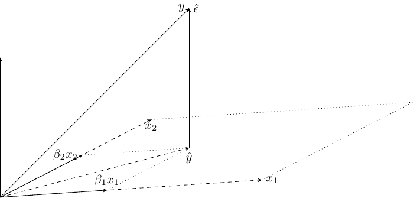
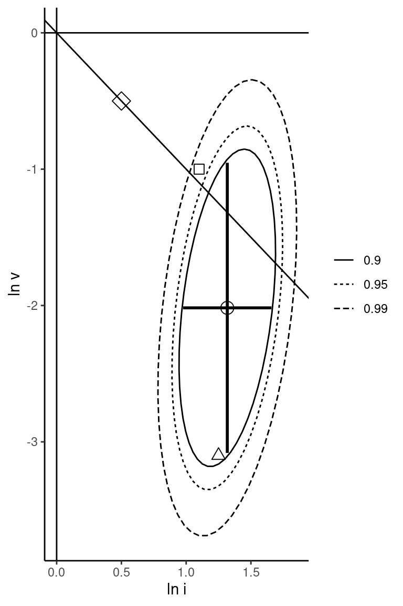

In this chapter, we’ll analyze the computation and the properties of the OLS estimator when the number of covariates (\(K\)) is at least 2. Actually, we’ll analyze in depth the case when \(K=2\) (generalizing from \(K=2\) to \(K>2\) being quite simple) and, compared to the previous two chapters, we’ll insist on two important points:
the use of matrix algebra, which makes the computation of the estimator and the analysis of its properties elegant and compact,
the correlation between the covariates; actually we’ll show that the multiple and the simple linear models are different only if there exists such a correlation.
We’ll roughly follow the same plan as for the simple linear model: Section 3.1 presents the structural model and the data set that we’ll use throughout the chapter, Section 3.2 the computation of the estimator, Section 3.3 the geometry of the multiple linear model, Section 3.4 the computation of the estimator with R, Section 3.5 its statistical properties and Section 3.6 the inference methods (confidence interval and tests). Finally, Section 3.7 presents system estimation and the constrained least squares estimator.
3.1 Model and data set
To illustrate the multiple regression model, we’ll use the example of the estimation of a model explaining economic growth, using a cross-section of countries.
Structural model
One of the most popular growth models in the economic literature is the Solow-Swan model. The production \(Y\) (or more precisely the added value or GDP) is performed using two production factors, labor \(L\) and capital \(K\). Physical labor is transformed in effective labor using a term called \(A\). \(A\) is time-varying (typically increasing) and therefore represents the effect of technical progress which increases the productivity of labor. The functional form of the production function is a Cobb-Douglas:
Coefficients for capital and labor are respectively \(\kappa\) and \(1-\kappa\). They represent the elasticity of the production respective to each factor, but also the share of each factor in the national income (\(\kappa\) is therefore the share of profits and \(1-\kappa\) the share of wages).
Each variable is a continuous function of time \(t\). We’ll denote, for each variable \(\dot{V}=\frac{d V}{d t}\) the derivative with respect to time. Finally, we’ll denote \(y(t) = \frac{Y(t)}{A(t)L(t)}\) and \(k(t)=\frac{Y(t)}{A(t)L(t)}\) production and capital per unit of effective labor. We therefore have:
\[
y(t) = k(t) ^ \kappa
\tag{3.2}\]
We’ll hereafter omit \((t)\) to make the notation less cluttered. Variation of capital is investment less depreciation. We assume that investment equals savings and that a constant percentage of income (\(i\)) is saved every year. The depreciation rate is denoted by \(\delta\). We then have:
\[
\dot{K} = \frac{d K}{d t} = i Y - \delta K
\]
The growth of the capital stock per unit of effective labor \(k\) is then:
Denoting \(n = \frac{\dot{L}}{L}\) and \(g = \frac{\dot{A}}{A}\) the growth rates of \(L\) and \(A\), i.e., the demographic growth rate and the technological progress rate, we finally have:
At the steady state, the growth rate of capital per unit of effective labor is 0. Solving \(\dot{k}(t)=0\) we get the steady state value of \(k(t)\), denoted by \(k^*\):
Replacing \(k(t)\) by \(k^*\), \(A(t)\) by \(A(0)e^{gt}\) and taking logs, we get:
\[
\ln\frac{Y(t)}{L(t)} = \ln A(0) + g t + \frac{\kappa}{1-\kappa} \ln i
- \frac{\kappa}{1 - \kappa} \ln (n + g + \delta)
\]
Finally, let’s denote \(\ln A(0) = a + \epsilon\). \(\epsilon\) is an error term which represents the initial dispersion between countries in terms of initial value of technical progress. With \(C=a + gt\), and \(v = \ln(n + g + \delta)\), the linear model that we wish to estimate is finally:
\[
\ln\frac{Y}{L} = C + \frac{\kappa}{1-\kappa} \ln i - \frac{\kappa}{1 - \kappa} \ln v + \epsilon
\tag{3.3}\]
We therefore get a multiple regression model for which the response is the log of GPD per capita, (\(\ln \frac{Y}{L})\) and the two covariates are \(\ln i_n\) (the saving rate) and \(\ln v_n\) (the sum of the demographic growth, the technical progress and the depreciation rates). Moreover, the structural model imposes some restrictions on the coefficients that can be tested. The two slopes are, in terms of the structural parameters of the theoretical model: \(\beta_i = \frac{\kappa}{1-\kappa}\) and \(\beta_v = -\frac{\kappa}{1 - \kappa}\). Moreover, \(\kappa\) is the elasticity of the GDP with the capital and also the share of profits in GDP. A common approximation for the value of this parameter is about 1/3, which implies: \(\beta_i = - \beta_v = \frac{\kappa}{1-\kappa}=0.5\).
Mankiw, Romer, and Weil (1992) proposed a generalization of the Solow-Swan model that includes human capital, denoted by \(H\). The production function is now:
\(\lambda\) is the share of human capital in the GDP and the share of labor is now \((1 - \kappa - \lambda)\). The model is very similar to the one we previously developed. We first compute the growth rate of physical and human capital (\(\dot{k}\) and \(\dot{h}\)) per unit of effective labor, we set these two growth rates to 0 to get the stocks of physical and human capital at the steady state per unit of effective labor (\(k^*\) and \(h^*\)) and we introduce these two values in the production function to get:
\[
\ln\frac{Y}{L} = C + \frac{\kappa}{1-\kappa-\lambda} \ln i +
\frac{\lambda}{1-\kappa-\lambda} \ln e - \frac{\kappa + \lambda}{1 - \kappa-\lambda} \ln v + \epsilon
\tag{3.4}\]
where \(e\) is the per capita level of human capital. The model now contains three covariates and three slopes (\(\beta_i\), \(\beta_e\) and \(\beta_v\)). Moreover, the structural model implies a structural restriction (\(\beta_i + \beta_e + \beta_v = 0\)) that is testable.
Data set
growth contains the data used by Mankiw, Romer, and Weil (1992). It consists of 121 countries for 1985.
# A tibble: 121 × 9
country group gdp60 gdp85 gdpgwth popgwth inv school growth
<chr> <fct> <dbl> <dbl> <dbl> <dbl> <dbl> <dbl> <dbl>
1 Algeria other 2485 4371 4.8 0.026 0.241 0.045 0.565
2 Angola lqdata 1588 1171 0.8 0.021 0.058 0.018 -0.305
3 Benin lqdata 1116 1071 2.2 0.024 0.108 0.018 -0.0412
# ℹ 118 more rows
This data set contains a variable called group which enables the selection of subsamples. The modalities of this variable are:
"oil": for countries whose most part of the GDP is linked to oil extraction,
"oecd": for OECD countries,
"lqdata": for countries with low quality data,
"other": for other countries.
The variables used in the following regressions are per capita GDP in 1985 (gdp85), investment rate (inv) and growth rate of the population (popgwth). To get the variable denoted by v in the previous section, we need to add to the growth rate of the population the technical progress rate and the rate of depreciation. As these two variables are difficult to measure consistently, the authors assume that they don’t exhibit any cross-country variation and that they sum to 5%. Therefore, v equals popgwth + 0.05.
We first investigate the relationship between the two covariates: inv and popgwth. Figure 3.1 presents the scatterplot, the size of the points being proportional to GDP per capita.
Figure 3.1: Investment rate and demographic growth
There is a weak negative correlation between the two variables and rich countries are in general characterized by a low demographic growth rate and a high investment rate. We also remark that there is an outlier, Kuwait, which has a very high demographic growth rate. We then compute the variable v and we rename inv and school in i and e as in Equation 3.4:
growth<-mutate(growth, v =popgwth+0.05)%>%rename(i =inv, e =school)
3.2 Computation of the OLS estimator
In this section, we present the computation of the OLS estimator with a number of covariates \(K \geq 2\). We start with the case where \(K=2\), for which it is possible to compute the estimators using roughly the same notations as the one used for the simple linear regression model. Then we’ll perform the computation in the general case using matrix algebra.
For one observation, denoting \(x_{n1}\) and \(x_{n2}\) the two covariates for observation \(n\), the model is:
Each observation is now a point in the 3-D space defined by \((x_1, x_2, y)\) and \(\gamma ^ \top = (\alpha, \beta_1, \beta_2)\) are the coordinates of a plane that returns the expected value of \(y\) for a given value of \(x_1\) and \(x_2\). The residual sum of squares is:
\[f(\alpha, \beta) =\sum_{n = 1} ^ N\left(y_{n}-\alpha-\beta_1x_{n1}-\beta_2x_{n2}\right)^2\] which leads to the following three first-order conditions:
which means that the sample mean is on the regression plane, or that the sum of the residuals is zero. For the last two lines of Equation 3.5, the terms in parentheses are the residual for one observation and as its mean is 0, they indicate that the sample covariance between the residuals and both covariates should be 0. Therefore, we get exactly the same conditions as the one obtained for the simple linear regression model. Subtracting Equation 3.6 from the last two lines of Equation 3.5, we get:
\[
\left\{
\begin{array}{l}
\sum_{n = 1} ^ N x_{n1}\left[(y_{n}-\bar{y})-\beta_1(x_{n1}-\bar{x}_1) -
\beta_2(x_{n2} - \bar{x}_2)\right]=0 \\
\sum_{n = 1} ^ N x_{n2}\left[(y_{n}-\bar{y})-\beta_1(x_{n1}-\bar{x}_1) -
\beta_2(x_{n2} - \bar{x}_2)\right]=0 \\
\end{array}
\right.
\] or replacing \(x_{nk}\) by \(x_{nk} - \bar{x}_k\) and developing terms:
We therefore have a system of two linear equations with two unknown parameters (\(\beta_1\) and \(\beta_2\)) that could be solved, for example, by substitution. However, the use of matrix algebra enables to solve such a problem in a much simpler way. Denote:
\[
X=\left(\begin{array}{cc}
x_{11} & x_{12} \\
x_{21} & x_{22} \\
\vdots & \vdots \\
x_{N1} & x_{N2} \\
\end{array}\right)
\;\;
y=\left(\begin{array}{c}
y_1 \\
y_2 \\
\vdots \\
y_N \\
\end{array}\right)
\;\;
\beta=\left(\begin{array}{c}
\beta_1 \\
\beta_2 \\
\end{array}\right)
\]\(X\) is a matrix with two columns (\(K\) in the general case) and \(N\) lines (the number of observations) and \(y\) is a vector of length \(N\). We define \(\tilde{I} = I - J / N\) where \(I\) is a \(N \times N\) identity matrix and \(J\) a \(N\times N\) matrix of ones. For example, for \(N = 3\):
Premultiplying a vector \(z\) of length \(N\) by \(J/N\), we get a vector of length \(N\) containing the sample mean of \(z\)\(\bar{z}\) repeated \(N\) times. As premultiplying \(z\) by the identity matrix returns \(z\), premultiplying \(z\) by \(\tilde{I}\) returns a vector of length \(N\) containing the \(N\) values of \(z\) in difference from the sample mean. Note that \(\tilde{I}\) is idempotent, which means that \(\tilde{I} \times \tilde{I}\). It can be checked by using direct multiplication, but also by reminding that premultiplying a vector by \(\tilde{I}\) removes the sample mean from the values of the vector. The transformed vector then has a zero mean, so that applying the same premultiplication one more time will leave it unchanged. Therefore, \(\tilde{I}(\tilde{I} z) = \tilde{I}z\). Denoting \(\tilde{z} = \tilde{I} z\), we get:
\(S_{kk}\) is the total variation of \(x_k\), \(S_{kl}\) the covariation of \(x_k\) and \(x_l\) and \(S_{ky}\) the covariation between covariate \(k\) and the response. Note that the quantities \(S_{kk}\) and \(S_{ky}\) were already present in the simple linear model as \(S_{xx}\) and \(S_{xy}\) (there are now two of them). The new term is \(S_{kl}\), which measures the correlation between the two covariates.
Equation 3.7 can then be written in matrix form as:
Note that premultiplying the vector \(\tilde{X}^\top \tilde{y}\) by the inverse of \(\tilde{X} ^ \top \tilde{X}\) is a natural extension of the computation we’ve performed for the simple linear model, which consisted of dividing \(S_{xy}\) by \(S_{xx}\). To understand this formula, we write \(\tilde{X} ^ \top \tilde{X}\) and \(\tilde{X} ^ \top \tilde{y}\) as:
which is exactly the same formula that we had for the unique slope in the case of the simple regression model. This means that, if \(x_1\) and \(x_2\) are uncorrelated in the sample, regressing \(y\) on \(x_1\) or on \(x_1\) and \(x_2\) leads exactly to the same estimator for the slope of \(x_1\).
The general formula for \(\hat{\beta}_1\) in term of the estimator of the simple linear model \(\hat{\beta}_1^S\) (Equation 1.10) is:
We have \(\mid\hat{\rho}_{12} \hat{\rho}_{1y}\mid \leq \mid\hat{\rho}_{2y}\mid\), or \(\left| \frac{\hat{\rho}_{2y}}{\hat{\rho}_{12}\hat{\rho}_{1y}}\right| \geq 1\).
Consider the case where the two covariates are positively correlated with the response. As an example, consider the wage equation with \(x_1\) education and \(x_2\) a dummy for males. Two cases should then be analyzed:
the two covariates are positively correlated (males are more educated than females on average). In this case \(\hat{\rho}_{2y}/(\hat{\rho}_{12}\hat{\rho}_{1y})>1\), and the numerator of Equation 3.11 is lower than \(1 - \hat{\rho}_{12} ^ 2\), so that \(\hat{\beta}_1<\hat{\beta}_1^S\). \(\hat{\beta}_1 ^ S\) is upward biased because it estimates the sum of the positive direct effect of education on wage and a positive indirect effect (more education leads to a subpopulation with a higher share of males and therefore higher wages),
the two covariates are negatively correlated (males are less educated than females on average). In this case, \(\hat{\rho}_{2y}/(\hat{\rho}_{12}\hat{\rho}_{1y})<0\) and the numerator of Equation 3.11 is greater than 1, so that \(\hat{\beta}_1>\hat{\beta}_1^S\). \(\hat{\beta}_1 ^ S\) is downward biased because it estimates the sum of the positive direct effect of education on wage and a negative indirect effect (more education leads to a subpopulation with a lower share of males and therefore lower wages).
The general derivation of the OLS estimator can be performed using matrix algebra, denoting \(j_N\) a vector of 1 of length \(N\), \(Z = (j_N, X)\) a vector formed by binding a vector of 1 to the matrix of covariates and \(\gamma^\top = (\alpha, \beta ^ \top)\) the vector of parameters obtained by adding the intercept \(\alpha\) to the vector of slopes:
\[
f(\gamma) = (y - Z\gamma)^\top (y - Z\gamma) = y ^ \top y + \gamma ^ \top Z
^ \top Z \gamma -2 \gamma ^ \top Z ^ \top y
\]
The \(K+1\) first-order conditions are:
\[
\frac{\partial f}{\partial \gamma} = 2 Z ^ \top Z \gamma - 2 Z ^ \top
y = -2 Z ^ \top (y - Z\gamma) = 0
\]
The last expression indicates that all the columns of \(Z\) are orthogonal to the vector of residuals \(y - Z\gamma\). Solving for \(\gamma\), we get:
\[
\hat{\gamma} = (Z ^ \top Z) ^ {- 1} Z ^ \top y
\tag{3.12}\]
The matrix of second derivatives is:
\[
\frac{\partial^2 f}{\partial \gamma\partial^\top \gamma} =
2 Z ^ \top Z
\]
It is a positive semi-definite matrix, so that \(\hat{\gamma}\) is a minimum of \(f\). Comparing Equation 3.12 and Equation 3.8, we can see that the formula of the OLS is the same with different matrices (respectively \(\tilde{X}\) and \(Z\)), the first equation returning \(\hat{\beta}\) and the second one \(\hat{\gamma} ^ \top = (\hat{\alpha}, \hat{\beta} ^ \top)\).
3.3 Geometry of least squares
Geometry of the multiple regression model
The geometry of the multiple regression model is presented in Figure 3.2.

Figure 3.2: Geometry of the multiple regression model
We now have \(N = 3\) and \(K = 2\) and therefore each variable is a vector in the 3-D space. As the two covariates \(x_1\) and \(x_2\) are linearly independent, they span a subspace of dimension 2, which is a plane in this 3-D space. \(\hat{y}\) is the orthogonal projection of \(y\) on this subspace and \(\hat{\epsilon}\), is the vector that links \(\hat{y}\) and \(y\). \(\hat{\epsilon}\) is therefore the projection of \(y\) on the complement to the subspace defined by \((x_1, x_2)\), which is a straight line orthogonal to the plane spanned by \((x_1, x_2)\). Therefore \(\hat{\epsilon}\) is orthogonal to \(x_1\) and to \(x_2\), which means that the residuals are uncorrelated with the two covariates. The decomposition of \(y\) on the sum of two orthogonal vectors \(\hat{\epsilon}\) and \(\hat{y}\) doesn’t depend on the two variables \(x_1\) and \(x_2\) per se, but on the subspace spanned by \(x_1\) and \(x_2\). This means that any couple of independent linear combination of \(x_1\) and \(x_2\) will leads to the same subspace as the one defined by \(x_1\) and \(x_2\) and therefore to the same residuals and the same fitted values.
More formally, as \(\hat{\beta} = (X ^ \top X) ^ {-1} X ^ \top y\), we have \(\hat{y} = X \hat{\beta} = X (X ^ \top X) ^ {-1} X ^ \top y = P_X y\). \(P\) is sometimes called the “hat” matrix, as it “puts a hat” on \(y\). This matrix transforms the vector of response on a vector of prediction. As \(\hat{\epsilon} = y - \hat{y}\), we also have \(\hat{\epsilon} = y - P_X y = (I-P_X) y=M_Xy\). We therefore consider two matrices \(P_X\) and \(M_X\):
\[
\left\{
\begin{array}{rcl}
P_X &=& X (X ^ \top X) ^ {-1} X ^ \top \\
M_X &=& I - X (X ^ \top X) ^ {-1} X ^ \top \\
\end{array}
\right.
\tag{3.13}\]
that are square and symmetric of dimension \(N \times N\), which means that they are in practice large matrices, and are therefore never computed in practice. However, they have very interesting analytical features. First, they are idempotent, which means that \(P_X \times P_X = P_X\) and \(M_X \times M_X = M_X\). This means that while premultiplying a vector by such a matrix, this vector is projected in a subspace. For example, premultiplying \(y\) by \(P_X\) gives \(\hat{y}\), the vector of fitted values. It is a linear combination of \(x_1\) and \(x_2\) and therefore belongs to the subspace spanned by \(x_1\) and \(x_2\). Therefore, \(P_X \hat{y}\) obviously equal \(\hat{y}\) and therefore \(P_X \times P_X = P_X\). Except for the identity matrix, idempotent matrices are not full rank. Their rank can be easily computed using the fact that the rank of a matrix is equal to its trace (the sum of the diagonal elements) and that the trace of a product of matrices is invariant to any permutation of the matrices: \(\mbox{tr} ABC = \mbox{tr} BCA = \mbox{tr} CAB\).
For a regression with an intercept, the model matrix \(Z\) has \(K + 1\) column, the first one being a column of one. In this case, the rank of \(P_Z\) and \(M_Z\) are: \(\mbox{rank} \,P_Z = \mbox{tr}\, P_Z = \mbox{tr}\, Z (Z ^ \top Z) ^ {-1} Z ^ \top = \mbox{tr}\, (Z ^ \top Z) ^ {-1} Z ^ \top Z = \mbox{tr}\, I_{K+1} = K + 1\) and \(\mbox{rank} \,M_Z = \mbox{tr}\, (I_N - P_X) = \mbox{tr}\, I_N - \mbox{tr}\, P_Z = N - K - 1\).
Finally, the two matrices are orthogonal: \(P_ZM_Z= P_Z(I - P_Z)=P_Z-P_Z=0\), which means that they perform the projection of a vector on two orthogonal subspaces.
Getting back to Figure 3.2, \(P_X\) project \(y\) on the 2-D subspace (a plane) spanned by \(x_1\) and \(x_2\) and \(M_X\) project \(y\) on a 1-D subspace (the straight line orthogonal to the previous plane). \(M_X\) and \(P_X\) perform therefore an orthogonal decomposition of \(y\) in \(\hat{y}\) and \(\hat{\epsilon}\), which means that \(\hat{y} + \hat{\epsilon} = y\) and that \(\hat{y}^\top\hat{\epsilon} = 0\).
Frisch-Waugh theorem
Consider the regression of \(y\) on a set of regressors \(X\) which, for some reasons, is separated in two subsets \(X_1\) and \(X_2\). Suppose that we are only interested in the coefficients \(\beta_2\) associated with \(X_2\). The Frisch-Waugh theorem states that the same estimator \(\hat{\beta}_2\) is obtained:
by regressing \(y\) on \(X_1\) and \(X_2\),
by first regressing \(y\) and each column of \(X_2\) on \(X_1\), then taking the residuals \(M_1y\) and \(M_1{X}_2\) of these regressions and finally regressing \(M_1y\) on \(M_1X_2\).
The first regression is the regression of \(y\) on \(x_1\) and \(x_2\). We then get an orthogonal decomposition of \(y\) in the vector of fitted values \(\hat{y}=P_{12}y\) and of the residuals \(\hat{\epsilon}_{12}=M_{12}y\). We also show in this figure the decomposition of \(\hat{y}\) in \(x_1\) and \(x_2\), which is represented by the sum of the two vectors \(\hat{\beta}_1 x_1\) and \(\hat{\beta}_2 x_2\). \(\hat{\beta}_2\) is the estimator of \(x_2\) on this first regression and is represented by the ratio between \(\hat{\beta}_2 x_2\) and \(x_2\).
The second regression is the regression of \(M_1y\) on \(M_1x_2\). \(M_1x_2\) is the residual of the regression of \(x_2\) on \(x_1\). Therefore, this vector lies in the line that is in the plane spanned by \(x_1\) and \(x_2\) and is orthogonal to \(x_1\). \(M_1y\) is the residual of \(y\) on \(x_1\); it is therefore orthogonal to \(x_1\).
As both \(M_1y\) and \(M_{12}y\) are orthogonal to \(x_1\), so is the vector that joins those two vectors. Therefore, this vector is parallel to \(M_1x_2\), and it is therefore the fitted value of the second regression (\(M_1y\) on \(M_1x_2\)), \(P_{M_1x_2}y\). It is also equal to \(\tilde{\beta}_2 M_1x_2\), \(\tilde{\beta}_2\) being the estimator of \(x_2\) on the second regression. Note also that \(\hat{\epsilon}_{12} = M_{12}y\) is the residual of the second regression, which is therefore the same as the residuals of the first regression.
Finally, consider the regression of \(\hat{\beta}_2 x_2\) on \(x_1\). The residual of this regression is \(\hat{\beta}_2M_1x_2\). As it lies on the plane spanned by \(x_1\) and \(x_2\) and is orthogonal to \(x_1\), it is parallel to \(P_{M_1x_2}y=\tilde{\beta}_2M_1x_2\). Moreover, the Frisch-Waugh theorem states that both vectors have the same length and are therefore identical, which means that \(\tilde{\beta}_2 = \hat{\beta}_2\) and that the two regressions give identical estimators.
The Frisch-Waugh is easily demonstrated using some geometric arguments. Consider the regression with all the covariates:
\(M_1 X_1 \hat{\beta}_1\) is 0 as \(X_1 \hat{\beta}_1\) is obviously in the subset spanned by \(X_1\) and therefore its projection on the orthogonal complement is 0. \(M_{12} y\) is orthogonal to the subset spanned by \(X\) and is therefore also orthogonal to the subset spanned by \(X_1\). Therefore \(M_1 M_{12} y = M_{12} y\). We therefore have:
which is exactly the estimation obtained by regressing \(M_1 y\) on \(M_1 X_2\). We finally note (an important result that will be used in Section 3.6.3), that \(\hat{\epsilon}_1=M_1y\), \(\hat{\epsilon}_{12}=M_{12}y\) and \(P_{M_1x_2}y\) form a right triangle, \(\hat{\epsilon}_1\) being the hypotenuse. Therefore, using the Pythagorean theorem, we have:
To estimate the multiple linear model, we use as for the single linear model the lm function; the difference being that now, on the right side of the formula, we have several variables (here two), separated by the + operator. Actually, formulas have a much richer syntax that includes other operators, for example * and :. This will be discussed in Chapter 4.
The estimator can also be computed “by hand”, using matrix algebra. To start, we use the model.frame function which, as lm, has formula and data arguments. For pedagogical purposes, we add the group variable in the formula.
model.frame returns a data frame that contains the data required for estimating the model described in the formula. More precisely, it performs three tasks:
it selects only the columns of the initial data frame that are required for the estimation,
it transforms these variables if required, here gdp85, i and v are transformed in logarithms and the columns are renamed accordingly,
it selects only the observations for which there are no missing values for the relevant variables; note here that growth has 121 rows and mf only 107 rows.
Several interesting elements of the model can be extracted from the model frame. The \(Z\) matrix is obtained using the model.matrix function, which also uses a formula/data interface, the data being the model frame mf:
Note that the model matrix includes an intercept1 and the group variable, which is a categorical variable is transformed into a set of dummy variables. More precisely, a dummy variable is created for all the modalities except the first one ("oecd"). The response is obtained using the model.response function:
But crossprod is more efficient, \(A^\top B\) being obtained using crossprod(A, B) and \(A^\top A\) is either crossprod(A, A) or crossprod(A). Therefore, \(Z^\top Z\) and \(Z^\top y\) are respectively obtained using:
Moreover, solve can be used to solve a system of linear equations: solve(A, z) compute the vector \(w\) such that \(Aw=z\), which is \(w=A^{-1}z\). Therefore, the OLS estimator can be computed using the more efficient and compact following code:
The efficient method used by lm to compute the OLS estimate is the QR decomposition:2 the matrix of covariates \(Z\) can be written as the product of an orthonormal matrix \(Q\) of dimension \(N \times (K + 1)\) (therefore \(Q^\top Q = I\)) and an upper triangular matrix \(R\) of dimension \((K+1) \times (K+1)\). Then, the linear model can be written as:
with \(\delta = R \gamma\). With \(Q\) as the matrix of covariates, the OLS estimator is \(\hat{\delta} = (Q ^ \top Q ) ^ {-1} Q ^ \top y = Q^\top y\), which is obtained without matrix inversion. Then \(\hat{y} = Q \hat{\gamma} = Q Q ^ \top y\) and \(\hat{\epsilon} = (I - Q Q ^ \top) y\). With \(Z\) as the matrix of covariates, the OLS estimator is \(\hat{\gamma} = R ^ {-1} \delta\). The inverse of a triangular matrix can be very easily obtained with a very high numerical accuracy. Moreover, \(\hat{\gamma}\) can be obtained without inverting \(R\). With \(K = 2\), we have:
We illustrate the computation of the OLS estimator using the QR decomposition and using the previously estimated growth model, without the group covariate. The QR decomposition is performed using the qr function:
qr returns an object of class qr, and the qr.R and qr.Q function can be used to retrieve the two matrices. We check that \(R\) is upper triangular and that \(Q^\top Q = I\):
In this section, we’ll briefly analyze the statistical properties of the OLS estimator with more than one covariate. Most of these properties are similar to the one we have described in Chapter 2. They’ll be presented in this section using matrix algebra.
Unbiasedness of the OLS estimator
The vector of slopes can be written as a linear combination of the vector of response and then of vector of the errors:
The unbiasedness condition is therefore that \(\mbox{E}(\epsilon \mid X) = 0\), which is a direct generalization of the result obtained for the simple linear regression model, namely \(\epsilon\) has a constant expected value (that can be set to 0 without any restriction) whatever the value of the covariates. It implies also that the population covariance between the errors and any of the covariates is 0.
Variance of the OLS estimator
The variance of \(\hat{\beta}\) is now a matrix of variances and covariances:
This is a sandwich formula, the meat: \(\frac{1}{N}\mbox{E}\left(X'\bar{I}\epsilon \epsilon ^ \top \bar{I} X \mid X\right)\) being surrounded by two slices of bread: \(\left(\frac{1}{N} \tilde{X}^\top\tilde{X}\right)^{-1}\). Note that the two matrices are square and of dimension \(K\). The bread is just the inverse of the covariance matrix of the covariates. The meat is the variance of the score vector, i.e., the vector of the first-order conditions. For \(K = 2\), it is the expected value of:
\[
\small{
\frac{1}{N}
\left(
\begin{array}{cccc}
\left(\sum_{n=1} ^ N (x_{n1} - \bar{x}_1) \epsilon_n)\right) ^ 2 &
\left(\sum_{n=1} ^ N (x_{n1} - \bar{x}_1) \epsilon_n)\right)
\left(\sum_{n=1} ^ N (x_{n2} - \bar{x}_2) \epsilon_n)\right) \\
\left(\sum_{n=1} ^ N (x_{n1} - \bar{x}_1) \epsilon_n)\right)
\left(\sum_{n=1} ^ N (x_{n2} - \bar{x}_2) \epsilon_n)\right) &
\left(\sum_{n=1} ^ N (x_{n2} - \bar{x}_2) \epsilon_n)\right) ^ 2
\end{array}
\right)
}
\]
which is a generalization of the single regression case where the “meat” reduces to the scalar \(\left(\sum_{n=1} ^ N (x_n - \bar{x}) \epsilon_n)\right) ^ 2\). As for the simple regression model, the formula of the variance simplifies with the hypothesis that the errors are homoskedastic (\(\mbox{E}(\epsilon_n ^ 2 \mid x) = \sigma_\epsilon ^ 2\)) and uncorrelated (\(\mbox{E}(\epsilon_n \epsilon_m \mid x) = 0 \; \forall \; m \neq n\)). In this case, the meat reduces to \(\sigma_\epsilon ^ 2 \frac{1}{N} \tilde{X} ^ \top \tilde{X}\), i.e., up to a scalar to the matrix of covariance of the covariates, and Equation 3.16 becomes:
\[
\sigma_{\hat{\beta}_k}=
\frac{\sigma_\epsilon}{\sqrt{N}\hat{\sigma}_k\sqrt{1-\hat{\rho}_{12}^2}}
\mbox{ for }k = 1, 2,\;
\hat{\sigma}_{\hat{\beta}_1\hat{\beta}_2}=
-\frac{\hat{\rho}_{12}\sigma_\epsilon^2}{N\hat{\sigma}_1\hat{\sigma}_2(1-\hat{\rho}_{12}^2)}
\mbox{ and } \hat{\rho}_{\hat{\beta}_1\hat{\beta}_2} = -\hat{\rho}_{12}
\tag{3.18}\]
First remark that if \(\hat{\rho}_{12} = 0\), which means that the two covariates are uncorrelated, the formula for the standard deviation of a slope in the multiple regression model reduces to the formula of the single regression model, which means that the standard deviation is proportional to:
the standard deviation of the error,
the inverse of the standard deviation of the corresponding covariate,
the inverse of the square root of the sample size.
When the two covariates are correlated, the last term \(1/\sqrt{1 - \hat{\rho}_{12}^2}\) is added and inflates the standard deviation. This means that the more the covariates are correlated (whatever the sign of the correlation) the larger is the standard deviation of the slope. The intuition is that, if the two covariates are highly correlated, it is difficult to estimate precisely the separate effect of each of them.
\(\sigma_\epsilon^2\) being unknown, \(\sigma^2_{\hat{\beta}}\) can’t be computed. If the error were observed, a natural estimator of \(\sigma_\epsilon^2\) would be \(\sum_{n=1}^N (\epsilon_n-\bar{\epsilon}) ^ 2/N\). As the errors are unknown, one can use the residuals instead, which are related to the errors by the relation: \(\hat{\epsilon} = M_Z y = M_Z (Z\gamma + \epsilon) = M_Z \epsilon\), the last equality standing because \(Z\gamma\) is a vector of the subspace defined by the columns of \(Z\) and therefore \(M_ZZ\gamma = 0\). Therefore, we have: \(\hat{\epsilon} ^ \top \hat{\epsilon} = \epsilon ^ \top M_Z \epsilon\); as it is a scalar, it is equal to its trace. Using the rule of permutation, we get: \(\hat{\epsilon} ^ \top \hat{\epsilon} = \epsilon ^ \top M_Z \epsilon = \mbox{tr}\, M_Z \epsilon \epsilon ^ \top\). With spherical disturbances, we have \(\mbox{E}(\hat{\epsilon} ^ \top \hat{\epsilon}) = \mbox{tr}\, M_Z \sigma_\epsilon ^ 2 I = \sigma_\epsilon ^ 2 \mbox{tr} M_Z = (N - K - 1) \sigma_\epsilon ^ 2\). Therefore, an unbiased estimator of \(\sigma_\epsilon^2\) is:
\[
\dot{\sigma}_\epsilon^2 = \frac{\hat{\epsilon}^\top\hat{\epsilon}}{N - K - 1} =
\frac{\sum_{n=1}^N \hat{\epsilon}_n ^ 2}{N - K - 1}
\tag{3.19}\]
and replacing \(\sigma_\epsilon ^ 2\) by \(\dot{\sigma}_\epsilon ^ 2\) in Equation 3.17, we get an unbiased estimator of the covariance matrix of the estimators:
We now go back to the estimation of the growth model. As in Mankiw, Romer, and Weil (1992), we use a restricted sample by excluding countries for which most of the GDP is linked to oil extraction and those with low quality data.
The summary method computes detailed results of the regression, in particular the table of coefficients, a matrix that can be extracted using the coef method:
The demonstration made in Section 2.1.4 for the simple linear model can easily be extended to the multiple regression model. The OLS estimator is: \(\hat{\gamma} = (Z^\top Z)^{-1}Z^\top y = \gamma + (Z^\top Z)^{-1}Z^\top \epsilon\). Consider another linear estimator:
The unbiasedness of \(\tilde{\gamma}\) implies that \(DZ=0\), so that:
\[
\tilde{\gamma}-\gamma= \left[(Z^\top Z)^{-1}Z^\top + D\right]\epsilon = (\hat{\gamma}- \gamma) + D\epsilon = (\hat{\gamma}- \gamma) + Dy
\] because \(DZ=0\) implies that \(D\epsilon=Dy\). Therefore, \(\tilde{\gamma}- \hat{\gamma}=Dy\). The covariance between the OLS estimator and the vector of differences of the two estimators is:
\[
\mbox{E}\left[(\tilde{\gamma}-\hat{\gamma})(\hat{\gamma} - \gamma)^\top\right] = \mbox{E}\left[D\epsilon\epsilon^\top Z(Z^\top Z) ^ {-1}\right]
\] with spherical disturbances, this reduces to:
\[
\mbox{E}\left[(\tilde{\gamma}-\hat{\gamma})(\hat{\gamma} - \gamma)^\top\right] = \sigma_\epsilon ^ 2DZ(Z^\top Z) ^ {-1} =0
\] Therefore, we can write the variance of \(\tilde{\gamma}\) as:
\[
\mbox{V}(\tilde{\gamma}) = \mbox{V}\left[\hat{\gamma} + (\tilde{\gamma}-\hat{\gamma})\right] = \mbox{V}(\hat{\gamma}) + \mbox{V}(Dy)
\] as \(\mbox{V}(Dy)\) is a covariance matrix, it is semi-definite positive and, therefore, the difference between the variance matrix of any unbiased linear estimator and the OLS estimator is a semi-definite positive matrix, which means that the OLS estimator is the most efficient linear unbiased estimator.
Asymptotic properties of the OLS estimator
Asymptotic properties of the multiple regression model are direct extensions of those we have seen for the simple regression model. With \(\mbox{E}(\hat{\beta}) = \beta\) and \(\mbox{V}(\hat{\beta}) = \frac{\sigma_\epsilon ^ 2}{N} \left(\frac{1}{N}\tilde{X}^ \top X\right) ^ {- 1}\), the OLS estimator is consistent (\(\mbox{plim} \;\hat{\beta} = \beta\)) if the covariance matrix of the covariates \(\frac{1}{N}\tilde{X} ^ \top \tilde{X}\) converges to a finite matrix. The central-limit theorem implies that:
From Equation 1.14, one way to write the coefficient of determination for the simple linear regression model is:
\[
R^2 = 1 - \frac{\sum_{n=1} ^ N \hat{\epsilon}_n^2}{\sum_{n=1} ^ N (y_n - \hat{y})^2} = 1 - \frac{\hat{\sigma}_\epsilon^2}{\hat{\sigma}_y^2}
\]
The last term is obtained by dividing the residual sum of squares and the total variation of \(y\) by the sample size \(N\). This gives rise to biased estimators of the variances of the errors and of the response. Consider now the unbiased estimators: the numerator should then be divided by \(N - K - 1\) and \(\dot{\sigma}_\epsilon ^ 2\) is obtained. Similarly, the denominator should be divided by \(N-1\) to obtain an unbiased estimation of the variance of the response. We then obtain the adjusted coefficient of determination:
\[
\bar{R}^2 = 1 - \frac{\dot{\sigma}_\epsilon^2}{\dot{\sigma}_y^2}= 1 - \frac{\sum_{n=1} ^ N \hat{\epsilon}_n^2 / (N-K-1)}{\sum_{n=1} ^ N (y_n - \hat{y})^2 / (N-1)} =
1 - \frac{N - 1}{N - K - 1}\frac{\sum_{n=1} ^ N \hat{\epsilon}_n^2}{\sum_{n=1} ^ N (y_n - \hat{y})^2}
\]\(R^2\) necessarily increases when one more covariate is added to the regression because, even if this covariate is irrelevant, its sample correlation with the response will never be exactly 0 and therefore the sum of square will decrease. This is not the case with \(\bar{R}^2\) because \(\dot{\sigma}^2_\epsilon\) is the ratio of two terms which both increase when a covariate is added. Note also that \(\bar{R}^2\) is not necessarily positive.
3.6 Confidence interval and test
In Section 2.3, we have seen how to compute a confidence interval for a single parameter and how to perform a test for one hypothesis. The confidence interval was a segment, i.e., a range of values that contains the true value of the parameter with a given probability, and the tests were performed using a normal or a Student distribution. Of course, the same kind of analysis can be performed with a multiple regression. But, in this latter case:
a confidence interval can also be computed for several coefficients one at a time,
tests of multiple hypotheses can be performed, using a chi-squared or a Fisher distribution.
To illustrate these points, we’ll use the Solow model. Remember that the model to estimate is:
\[
\ln y = \alpha + \beta_i \ln i + \beta_v \ln v + \epsilon
\]
where \(y\) is the per capita gdp, \(i\) the investment rate and \(v\) the sum of the labor force growth rate, the depreciation rate and the technical progress rate. Moreover, the relation between \(\beta_i\) and \(\beta_v\) and the structural parameter \(\kappa\), which is the share of profits in the GDP is \(\beta_i = - \beta_v =\kappa / (1 -\kappa)\). We’ll analyze the confidence interval for the couple of coefficients \((\beta_i, \beta_v)\) and we’ll test two hypotheses:
the first is imposed by the model; we must have \(\beta_i + \beta_v = 0\),
the second corresponds to a reasonable value of the share of profits, which is approximately one-third; therefore, we’ll test the hypothesis that \(\kappa = 1/3\), which implies that \(\beta_i = 0.5\).
Note that these two hypotheses imply that \(\beta_v=-0.5\).
Simple confidence interval and test
The asymptotic distribution of the estimators is a multivariate normal distribution.3 The distribution of one estimator (say \(\hat{\beta}_1\))4 is a univariate normal distribution with, for the two covariates case, a standard deviation equal to: \(\sigma_{\hat{\beta}_1} = \frac{\sigma_\epsilon}{\sqrt{N}\hat{\sigma}_1\sqrt{1 - \hat{\rho}_{12} ^ 2}}\). Therefore \((\hat{\beta}_1 - \beta_1) / \sigma_{\hat{\beta}_1}\) follows (exactly if \(\epsilon\) is normal) a standard normal distribution. Confidence interval and tests for a coefficient are therefore computed exactly as for the case of the simple linear regression model. In particular, using Equation 3.18 and Equation 3.19, we get:
that follows exactly a Student distribution with \(N-K-1\) degrees of freedom if the errors are normal and asymptotically a normal distribution whatever the distribution of the errors. Therefore, \(1 - \alpha\) confidence intervals are: \(\hat{\beta}_k \pm \mbox{cv}_{1-\alpha / 2} \dot{\sigma}_{\hat{\beta}_k}\) where \(\mbox{cv}_{1-\alpha / 2}\) is the critical value of either a Student or a normal distribution. For a given hypothesis: \(H_0:\beta_k = \beta_{k0}\), \(t_{k0}=(\hat{\beta}_k - \beta_{k0})/\hat{\sigma}_{\hat{\beta}_k}\) is a draw on a normal or a Student distribution if \(H_0\) is true.
Remember that “reasonable” values of the two slopes in our growth model should be \(+/-0.5\). We check whether these values are in the confidence intervals, using the confint function:
\(0.5\) and \(-0.5\) are not in the 95% confidence interval for respectively \(\hat{\beta}_i\) and \(\hat{\beta}_v\). The hypotheses that the true values of the parameters are 0 is very easy to compute, as they are based on the t statistics that are routinely returned by the summary method for lm objects. But, in our example, the hypothesis that \(\beta_i = 0\) is the hypothesis that the share of profits is 0, which is of little interest. More interestingly, we could check the hypothesis that the coefficients are equal to \(\pm 0.5\). In this case, we can “manually” compute the test statistics by extracting the relevant elements in the matrix returned by coef(summary(x)):
which confirms that both hypotheses are rejected. The same kind of linear hypothesis on one coefficient can be simpler tested by using a different parametrization of the same model. The trick is to write the model in such a way that a subset of coefficients are 0 if the hypothesis is true. For example, in order to test the hypothesis that \(\beta_i = 0.5\), we must have in the model \((\beta_i - 0.5)\ln i\); therefore, the term \(-0.5\ln i\) is added on the right side of the formula and should therefore be added also on the left side. Adding also \(0.5 \ln v\) on both sides of the formula, we finally get:
\[
(\ln y - 0.5 \ln i + 0.5 \ln v) = \alpha + (\beta_i - 0.5) \ln i + (\beta_v + 0.5) \ln v + \epsilon
\]
and the two slopes are now equal to 0 under \(H_0\).
which gives exactly the same values for the \(t\) statistics.
A simple hypothesis may also concern a linear combination of several coefficients and not the value of one coefficient. For example, the structural growth model implies that \(\beta_i + \beta_v = 0\). If the hypothesis is true, \(\mbox{E}(\hat{\beta}_i + \hat{\beta}_v) = 0\), the variance being \(\mbox{V}(\hat{\beta}_i + \hat{\beta}_v) = \hat{\sigma}_{\hat{\beta}_1}^2 + \hat{\sigma}_{\hat{\beta}_2}^2 + 2 \hat{\sigma}_{\hat{\beta}_1\hat{\beta}_2}\), the statistic can then be computed by extracting the relevant elements of the covariance matrix of the fitted model:
v<-vcov(slw_tot)v_sum<-v[2, 2]+v[3, 3]+2*v[2, 3]stat_sum<-(coef(slw_tot)[2]+coef(slw_tot)[3])%>%unnamet_sum<-stat_sum/sqrt(v_sum)%>%unnamepval_sum<-2*pt(abs(t_sum), df =df.residual(slw_tot), lower.tail =FALSE)c(stat =stat_sum, t =t_sum, pv =pval_sum)## stat t pv ## -0.6996 -1.1372 0.2592
The hypothesis is therefore not rejected, even at the 10% level. Once again, such a linear hypothesis can be more easily tested using a different parametrization. Introducing in the model the term \((\beta_i + \beta_v) \ln i\), subtracting \(\beta_v \ln_i\) and rearranging terms:
\[
\begin{array}{rcl}
\ln y &=& \alpha + (\beta_i + \beta_v) \ln i + \beta_v \ln v -
\beta_v \ln i+ \epsilon \\
& = & \alpha + (\beta_i + \beta_v) \ln i + \beta_v
\ln \frac{v}{i} + \epsilon
\end{array}
\] We then have a model for which the two covariates are now \(\ln i\) and \(\ln v / i\), the hypothesis being that the coefficient associated to \(\ln i\) is equal to 0.
In the simple regression model, subtracting the expected value and dividing by the standard deviation, we get a standard normal deviate. Taking the square, we get a \(\chi^2\) with 1 degree of freedom. If the \(K\) slopes are uncorrelated, \(\sum_{k=1} ^ K(\hat{\beta}_k - \beta_{k0}) ^ 2/\sigma_{\hat{\beta}_k} ^ 2\) is a \(\chi^2\) with \(K\) degrees of freedom. If the slopes are correlated, this correlation should be “corrected”; more precisely, a quadratic form of the vector of slopes in deviation from its expectation with the inverse of its variance should be computed:
the last equality resulting from the fact that the coefficient of correlation of two slopes is the opposite of the coefficient of correlation of the corresponding covariates (see Equation 3.18). Therefore, a \((1-\alpha)\) confidence interval for a couple of coefficients \((\beta_1, \beta_2)\) is the set of values for which Equation 3.23 is lower than the critical value for a \(\chi ^ 2\) with 2 degrees of freedom, which is, for example, 5.99 for two degrees of freedom and \(1-\alpha = 0.95\). Equating Equation 3.23 to this critical value, we get the equation of an ellipse, with two particular nested cases:
if \(\hat{\rho}_{12} = 0\), i.e., if the two covariates and therefore the two coefficients are uncorrelated, the expression reduces to the sum of squares of the t statistics, which is an ellipse with vertical and horizontal tangents,
if \(\hat{\rho}_{12} = 0\) and \(\hat{\sigma}_1 = \hat{\sigma}_2\), the expression reduces further to the equation of a circle.
Equation 3.23 can’t be computed as it depends on \(\sigma_\epsilon\) which is unknown. Replacing \(\sigma_\epsilon\) by \(\dot{\sigma}_\epsilon\), we get:
where \(\hat{q}_2\) now follows asymptotically a \(\chi ^ 2\) distribution with 2 degrees of freedom. If the errors are normal, dividing by \(K\) (here 2), we get an exact Fisher \(F\) distribution with \(2\) and \(N - K - 1\) degrees of freedom. In the simple case of no correlation between the covariates, the \(\chi^2\) and the \(F\) statistics are therefore the sum and the mean of the squares of the t statistics. As for the Student distribution, which converges in distribution to a normal distribution, \(K \times\) the \(F\) statistic converges in distribution to a \(\chi ^ 2\) with \(K\) degrees of freedom. For example, with \(K=2\), the critical value for a \(F\) distribution with \(2\) and \(\infty\) degrees of freedom is half the corresponding \(\chi^2\) value with 2 degrees of freedom (5.99 for the 95% confidence level), which is \(2.996\). The confidence interval is represented in Figure 3.4; the circle point is the point estimation, the vertical and horizontal segments are the separate confidence intervals for both coefficients at the 95% level. We’ve also added a diamond point that corresponds to the hypothesis \(\kappa = 1/3\), which implies that \(\beta_i = - \beta_v = \frac{\kappa}{1-\kappa} = 0.5\). Finally, we add a line with a slope equal to \(-1\) and an intercept equal to 0 which corresponds to the hypothesis that \(\beta_i = - \beta_v\).

Figure 3.4: Ellipse of confidence for the two coefficients
The confidence ellipse is a “fat sausage”5 with the long part of the sausage slightly oriented in the lower-left/upper-right direction. This is because, as we have seen previously (see Figure 3.1), the two covariates exhibit a small negative correlation, which implies a small positive correlations between \(\hat{\beta}_i\) and \(\hat{\beta}_v\). The ellipse is also “higher” than “wide”, because \(v\) has a smaller variance than \(i\) and therefore \(\hat{\beta}_v\) has a larger variance than \(\hat{\beta}_i\). Note the difference between a set of two simple hypotheses and a joint hypothesis. Consider for example:
\((\beta_i = 1.1, \beta_v = -1)\) represented by a square point: both simple hypotheses are not rejected (the two values are in the unidimensional confidence interval), but the joint hypothesis is rejected, as the corresponding square point is outside the 95% confidence interval ellipse,
\((\beta_i = 1.25, \beta_v = -3.1)\) represented by a triangle point: the simple hypothesis \(\beta_i = 1.25\) is not rejected, the simple hypothesis \(\beta_b = -3.1\) is rejected, but the joint hypothesis is not rejected, the triangle point being inside the 95% confidence interval ellipse.
The hypothesis that the two coefficients sum to 0 is not rejected as some points of the straight line that figures this hypothesis are in the confidence ellipse. Concerning the hypothesis that \(\beta_i = 0.5\) and \(\beta_v = -0.5\), the two simple hypotheses and the joint hypothesis are rejected at the 95% confidence level; the two estimates are neither in the segments representing the simple confidence interval nor inside the ellipse figuring the joint confidence interval.
Joint hypothesis
To test a joint hypothesis for the values of a couple of parameters \((\beta_{10}, \beta_{20})\), we have just seen that we can simply check whether the corresponding point is inside or outside the confidence interval ellipse. We can also compute the statistic given in Equation 3.24 for \((\beta_1=\beta_{10}, \beta_2=\beta_{20})\) and compare it to the critical value.
The statistic is computed using the elements of the matrix returned by coef(summary(x)), which contains in particular the estimations and their standard deviations. We first compute the t statistics corresponding to the two simple hypothesis \(\beta_i = 0.5\) and \(\beta_v = -0.5\):
The critical values being much smaller than the computed statistics, the joint hypothesis is clearly rejected. The exact formula corrects the correlation between the two estimators using the coefficient of correlation between the two covariates. We compute this coefficient using the data frame of the fitted model, which is obtained using the model.frame function. Using the initial data frame growth wouldn’t give the correct value, as the estimation is not performed on the full data set because of missing data and because the estimation is performed on a subsample with some groups of countries that are excluded:
mf<-model.frame(slw_tot)r_iv<-summarise(mf, r =cor(`log(i)`, `log(v)`))%>%pull(r)r_iv## [1] -0.352
Note that the names of the covariates are not regular names as they contain parentheses, therefore they should be surrounded by the sign. The coefficient of correlation between the two covariates is \(-0.352\). We obtain:
The statistic (23.125) is slightly greater than the approximative value (15.475) which was previously computed; we therefore reject once again the null hypothesis.
The three tests
In the previous subsection, we started with a general (unconstrained) model, we constructed a confidence ellipse for the two parameters, and we were able to test a set of hypotheses, either by checking whether the values of the parameters corresponding to the hypotheses were inside the confidence ellipse, or by computing the value of the statistic for the tested values of the parameters. Actually, this testing principle, based on the unconstrained model, is just one way of testing a hypothesis. The geometry of least squares and the Frisch-Waugh theorem highlights the fact that any set of hypotheses can be tested using the fact that this set of hypotheses gives rise to two models: a constrained model, which imposes the hypotheses and an unconstrained model, which doesn’t impose the hypotheses. The same test can be performed using the constrained model, the unconstrained model or both, which give rise to three test principles:6
Wald test is based only on the unconstrained model,
lagrange multiplier or score test is based on the constrained model,
likelihood ratio test is based on the comparison between the two models.
A set of \(J\) linear hypotheses is written as:
\[
R \gamma = q
\]
where \(R\) is a matrix of dimension \(J \times (K + 1)\) and \(q\) is a vector of length \(J\). \(J\), the number of hypotheses, is necessarily lower or equal to \(K\). Actually, a set of \(J\) hypotheses can always be rewritten as a model of the form \(y = X_1\beta_1 + X_2\beta_2 + \epsilon\), the hypothesis being \(\mbox{H}_0: \beta_2 = 0\). In this setting, the three tests are easily constructed using the Frisch-Waugh theorem, with \(H_0: \beta_2 = 0\).
Wald test
The Wald test is based on the unconstrained model, for which a vector of slopes \(\hat{\beta}_2\) is estimated. Using the Frisch-Waugh theorem, this vector can be obtained as the regression of the residuals of \(y\) on \(X_1\) (\(M_1y\)) on the residuals of every column of \(X_2\) on \(X_1\) (\(M_1X_2\)). Then, \(\hat{\beta}_2 = (X_2^\top M_1 X_2) ^ {-1} X_2^\top M_1 y\), with expected value and variance equal to \(\beta_2\) (0 under \(H_0\)) and \(\mbox{V}(\hat{\beta}_2) = \sigma_\epsilon^2 (X_2^\top M_1 X_2) ^ {-1}\). Convergence in distribution implies that:
The distribution of the quadratic form of a centered vector of normal random variables of length \(J\) with the inverse of its covariance matrix is a \(\chi^2\) with \(J\) degrees of freedom:
Consider the constrained model, which imposes \(\beta_2 = 0\). It is therefore obtained by regressing \(y\) on \(X_1\) only, and the vector of residuals is \(\hat{\epsilon}_1 = M_1 y\). The idea of this test is that, if \(H_0\) is true, \(X_2 ^ \top \hat{\epsilon}_1\) should be close to zero, \(\hat{\epsilon}_1\) being “almost” orthogonal to the subspace spanned by \(X_2\). Therefore, we consider the vector \(X_2 ^ \top \hat{\epsilon}_1 = X_2 ^ \top M_1 y\), which, under \(H_0\), should have a 0 expected value. The variance of this vector is: \(\sigma_\epsilon ^ 2 (X_2^\top M_1X_2)^{-1}\) so that, applying the central-limit theorem:
The likelihood ratio test is based on the comparison of the objective function (the sum of square residuals) for the constrained and the unconstrained model. Remember, from Equation 3.14, that:
The first term on the left and the term on the right are residual sums of squares (respectively for the unconstrained and the constrained model). Therefore, the likelihood ratio test is based on: \(\mbox{SSR}_c - \mbox{SSR}_{nc} = ||P_{M_1X_2}y|| ^ 2 = y ^ \top P_{M_1X_2} y\). Dividing by \(\sigma_\epsilon^2\), we get exactly the same statistic as previously.
Computation of the three tests
Consider the augmented Solow model: \(y = \alpha + \beta_i i + \beta_v v + \beta_e e + \epsilon\), with \(\beta_i = \frac{\kappa}{1 - \kappa - \lambda}\), \(\beta_v = -\frac{\kappa + \lambda}{1 - \kappa - \lambda}\) and \(\beta_e = \frac{\lambda}{1 - \kappa - \lambda}\). For convenience, we compute the logarithm of the variables before using lm:
growth_sub2<-growth_sub%>%mutate(y =log(gdp85), i =log(i), v =log(v), e =log(e))mrw2<-lm(y~i+v+e, growth_sub2)
We consider two hypotheses:
\(\beta_i + \beta_v + \beta_e = 0\), this hypothesis is directly implied by the structural model,
\(\kappa = 1 /3\), the share of profits has a reasonable value.
The second hypothesis implies that \(\beta_i = \frac{1/3}{2/3 - \lambda}\) and \(\beta_e = \frac{\lambda}{2/3 - \lambda}\), and therefore that \(\beta_e = 2 \beta_i - 1\). The model can be reparametrized in such way that two slopes are 0 if the two hypotheses are satisfied:
\[
y + e - v = \alpha + \beta_i (i + 2e - 3v) + (\beta_e-2\beta_i+1)(e-v)+(\beta_i + \beta_e+\beta_v)v
\]
Therefore, the unconstrained model can be written as a model with \(y + e - v\) as the response and \(i + 2 e - 3 v\), \(e-v\) and \(v\) as the three covariates and the constrained model as a model with the same response but with \(i + 2 e - 3\) as the unique covariate.
Estimate Std. Error t value Pr(>|t|)
(Intercept) 7.79131 1.1924 6.5340 8.301e-09
i2 0.70037 0.1506 4.6510 1.488e-05
e2 0.32981 0.3611 0.9133 3.642e-01
v -0.06886 0.4654 -0.1480 8.828e-01
The two hypotheses can be tested one by one, as the test is that:
the slope of \(e2 = e-v\) equals 0 for the hypothesis that \(\kappa = 1/3\),
the slope of \(v\) equals 0 for the hypothesis that \(\beta_i+\beta_e+\beta_v=0\).
Both hypotheses are not rejected, even at the 10% level. To test the joint hypothesis, we can first use the approximate formula which is the sum or the mean of the squares of the t statistics (respectively \(\chi^2\) with 2 degrees of freedom and F with 2 and 71 degrees of freedom):
Based on this approximation, the joint hypothesis is clearly not rejected. We now turn to the computation of the statistics, using the three test principles.
Wald test
Considering the initial unconstrained model, for which the formula is \(y \sim i + v + e\), the set of the two hypotheses can be written in matrix form as:
\[
\left(
\begin{array}{cccc}
0 & 2 & 0 & - 1 \\
0 & 1 & 1 & 1 \\
\end{array}
\right)
\left(
\begin{array}{c}
\alpha \\ \beta_i \\ \beta_v \\ \beta_e
\end{array}
\right) =
\left(
\begin{array}{c}
1 \\ 0
\end{array}
\right)
\] The matrix \(R\) and the vector \(q\) are created in R:
We then have \(H_0: R\gamma - q = 0\) and, for the fitted unconstrained model, we get: \(R\hat{\gamma} - q\). Under \(H_0\) the expected value of this vector is 0 and its estimated variance is \(R^\top \hat{V}_{\hat{\gamma}}R=\hat{\sigma}_\epsilon ^ 2R^\top(Z^\top Z)^{-1}R\). Then:
car::linearHypothesis performs Wald tests with a nice syntax: the first argument is a fitted model, and the second one is a vector of characters which contains the character representation of the hypothesis:
car::linearHypothesis(mrw2, c("i + v + e = 0", "e = 2 * i - 1"))%>%gaze## F = 0.423, df: 2-71, pval = 0.657
Likelihood ratio test
The computation of the likelihood ratio statistic is very simple once the two models have been estimated. The residual sums of squares of the two models are extracted using the deviance method, and we divide the difference of the two sums of squares by \(\dot{\sigma}_\epsilon^2\) (the sigma method is used to extract the residual standard error) and by 2 to get an F statistic.
For the score test, we consider the reparametrized model and we define \(Z_1\) as a matrix containing a column of one and \(i + 2 e - 3 v\) and \(X_2\) as a matrix containing \(e-v\) and \(v\).
The test is based on the vector \(X_2 ^ \top \hat{\epsilon}_c\), where \(\hat{\epsilon}_c\) is the vector of the residuals for the constrained model. Under \(H_0\), the expected value of \(X_2 ^ \top \hat{\epsilon}_c\) is 0 and its variance is \(\sigma_\epsilon ^ 2 X_2^ \top M_1 X_2\). \(M_1 X_2\) is a matrix of residuals of all the columns of \(X_2\) on \(Z_1\).
Note that we’ve used lm with only a formula argument. In this case, the response and the covariates are vectors or matrices and not columns of a tibble. Note also that the left-hand side of a formula is a matrix and not a vector; in this case, each column is supposed to be a response and lm fit as many models than there are columns in this matrix. Then, the resid method no longer returns a vector, but a matrix, each column being a vector of residuals for one of the fitted models.
The statistic is then \(\hat{\epsilon}_c^\top X_2 \left[X_2^ \top M_1 X_2\right]^{-1} X_2 \hat{\epsilon}_c / \sigma_\epsilon^2\) and it is computed using an estimator of \(\sigma_\epsilon^2\), and dividing by \(J=2\) to get an F statistic.
The statistic is slightly different from the one computed previously, the difference being only due to the fact that the estimation of \(\sigma_\epsilon\) is based, for the score test, on the constrained model.
Testing that all the slopes are 0
The test that all the slopes are 0 is routinely reported by software performing OLS estimation. It can be computed using any of the three test principles, but the likelihood ratio test is particularly appealing in this context, the constrained model being a model with only an intercept: \(y_n = \alpha + \epsilon_n\). In this case, \(\hat{\alpha} = \bar{y}\) and \(\hat{\epsilon} = (y_n - \bar{y})\). Therefore, the residual sum of squares for the constrained model is \(S_{yy} = \sum_n (y_n - \bar{y}) ^ 2\) and is also denoted by \(\mbox{TSS}\) for total sum of squares. The statistic is then: \((\mbox{TSS} - \mbox{RSS})/\sigma_\epsilon ^ 2 \sim \chi ^ 2_K\), which is a \(\chi ^ 2\) with \(K\) degrees of freedom if the hypothesis that all the slopes are 0 is true. To compute this statistic, \(\sigma_\epsilon^2\) has to be estimated. A natural estimator is \(\mbox{RSS} / (N - K - 1)\) but, if \(H_0\) is true, \(\mbox{TSS} / (N - 1)\) is also an unbiased estimator. Moreover, dividing by the sample size (\(N\)) and not by the number of degrees of freedom leads to biased but consistent estimators. Using the first estimator of \(\sigma_\epsilon^2\) and dividing by \(K\), we get the \(F\) statistic with \(K\) and \(N-K-1\) degrees of freedom:
Using \(\mbox{TSS} / N\) as an estimator of \(\sigma_\epsilon^2\), we get a very simple statistic that is asymptotically a \(\chi^2\) with \(K\) degrees of freedom:
\[
N \frac{\mbox{TSS} -\mbox{RSS}}{\mbox{TSS}} \stackrel{a}{\sim} \chi^2_{K}
\]
These two statistics are closely related to the \(R^2\) which is, using this notation, equal to \(1 - \mbox{RSS} / \mbox{TSS} = (\mbox{TSS} - \mbox{RSS}) / \mbox{TSS}\). We can then write the \(F\) statistic as:
\[
\frac{R^2}{1 - R ^ 2}\frac{N - K - 1}{K}
\] and the asymptotic \(\chi^2\) statistic as \(N R^2\).
There is no easy way to extract the \(R^2\) and the \(F\) statistic with R. Both are computed by the summary method of lm:
The interest of this testing strategy is not limited to the test that all the slopes of a real model are 0. It can also be used to test any set of hypotheses, using reparametrization and the Frisch-Waugh theorem. Consider for example the hypothesis that \(\kappa = 0.5\) and \(\beta_i + \beta_e + \beta_v=0\). We have seen previously that, after reparametrization, this corresponds to the model:
with, if the two hypotheses are true, the two slopes associated with e2 and v equal to 0. Now, using the Frisch-Waugh theorem, and denoting \(Z_1 = (j, i_2)\) and \(X_2 = (e_2, v)\):
We get exactly the same estimators as previously for e2 and v, but now the joint hypothesis is that all the slopes of the second model are 0. Therefore, the test is based on the F statistic that is returned by summary(lm(x)) and doesn’t require any further calculus:
mrw_ncb%>%ftest%>%gaze## F = 0.435, df: 2-73, pval = 0.649
Actually, a degrees of freedom correction should be performed to get exactly the same results because mrw_ncb has \(75 - 2 = 73\) degrees of freedom, as the real number of degrees of freedom is \(75 - 4 = 71\).
3.7 System estimation and constrained least squares
Very often in economics, the phenomenon under investigation is not well described by a single equation, but by a system of equations. Moreover, there may be inter-equations constraints on the coefficients. It is particularly the case in the field of the microeconometrics of consumption or production. For example, the behavior of a producer is described by a minimum cost equation along with equations of factor demand and the behavior of a consumer is described by a set of demand equations.
System of equations
We consider therefore a system of \(L\) equations denoted by \(y_l=Z_l\beta_l+\epsilon_l\), with \(l=1\ldots L\). In matrix form, the system can be written as follows:
Therefore, the whole system can be estimated directly by stacking the vector of responses and by constructing a block-diagonal matrix of covariates, each block being the matrix of covariates for one equation.
As an example, consider the analysis of production characteristics (returns to scale, elasticities of substitution between pairs of inputs). The modern approach of production analysis consists of first considering the minimum cost function, which depends on the level of production and on input unit prices \(C(y, p_1, \ldots p_J)\) and then of deriving the demands for input using Shepard Lemma:
The cost function is obviously homogeneous of degree 1 in input unit prices, which means that, for a given level of input, if all the prices increase proportionally, the quantity of the different inputs are the same and therefore the cost function increases by the same percentage. This writes: \(C(y, \lambda p_1, \ldots \lambda p_J) = \lambda C(y, p_1, \ldots, p_J)\) and \(x_j(y, \lambda p_1, \ldots, \lambda p _J) = x_j(y, p_1, \ldots p_J)\); the latter relation indicating that the demands for input are homogeneous of degree 0 in input unit prices. Among the different functional forms that have been proposed to estimate the cost function, the translog specification is the most popular. It can be considered as the second-order approximation of a general cost function:
\[
\ln C = \alpha + \beta_y \ln y + \frac{1}{2}\beta_{yy} \ln^2 y +\sum_i \beta_i \ln p_i + \frac{1}{2}
\sum_i\sum_j \beta_{ij} \ln p_i \ln p_j
\]
Using Shephard Lemma, the cost share of input \(i\) is the derivative of \(\ln C\) with \(\ln p_i\).
Homogeneity of degree 1 in input prices implies that the cost shares don’t depend on the level of prices. Therefore, \(\sum_j^I \beta_{ij} = 0\), or \(\beta_{iI} = - \sum_j^{I-1} \beta_{ij}\) and:
There are 14 parameters to estimate in total (8 in the cost function and 3 in each of the cost share equations), but there are 6 linear restrictions; for example, the coefficient of \(p_1^*\) in the cost equation should be equal to the intercept of the cost share for the first factor.
We estimate the translog cost function with the apples data set of Ivaldi et al. (1996) who studied the production cost of apple producers. Farms in this sample produce apples and other fruits (respectively apples and otherprod). The authors observe the sales of apples and other fruits as well as the quantity of apple produced. Therefore, they are able to compute the unit price of apples. Both sales are divided by this unit price, so that apples is measured in apple quantity, and otherprod is measured in “equivalent” apple quantities. Therefore, they can be summed in order to have a unique output variable y. The expenses in the tree factors are given by capital, labor and materials and the corresponding unit prices are pc, pl and pm. The data set is an unbalanced panel of 173 farms observed for three years (1984, 1985 and 1986). We consider only one year (1985) and, for a reason that will be clear later, we divide all the variables by their sample mean:
These equations can be estimated one by one using OLS, but in this case, the trans-equations restrictions are ignored. The whole system can also be estimated directly by stacking the three vectors of responses and constructing a block diagonal matrix of covariates, each block being the relevant set of covariates for one equation. We use for this purpose the Formula package (Zeileis and Croissant 2010). This package extends usual formulas in two directions: first, several covariates can be indicated on the left- hand side of the formula (using the + operator), and several parts can be defined on both sides of the formula, using the | sign. For example:
y_1+y_2|y_3~x_1+x_2|x_3|x_4+x_5
This formula has two sets of responses, the first containing \(y_1\) and \(y_2\), and the second \(y_3\). Three sets of covariates are defined on the right-hand side of the formula.
For our production analysis, we first create a “meta” formula which contains the three responses on the left side and the whole set of covariates on the right side. Then, we extract, using model.matrix, the three model matrices for the three equations (Z_c, Z_l and Z_m respectively for the cost, labor share and material share equations). The column names of these matrices are customized using the nms_cols function which, for example, turns the original column names of Z_l ((Intercept), pl and pm) to sl_cst, sl_pl and sl_pm. We then construct the block diagonal matrix (using the Matrix::bdiag function) and use our customized names:
Formula::model.part enables to retrieve any part of the model. Here, we want to extract the three responses which are on the only left side of the formula. Therefore, we set lrs and rhs respectively to 1 and 0. The result is a data frame with three variables ct, sl and sm. We then use dplyr::pivot_longer, to stack the three responses in one column. Note the use of the optional argument cols_vary that is set to "slowest", so that the elements are stacked columnwise:
In order to avoid having to write the whole long list of covariates, the dot can be used on the right-hand side of the formula, which means in this context all the variables (except the response which is on the left-hand side of the formula). The intercept and the equation variable should be omitted from the regression.
Linear restrictions on the vector of coefficients to be estimated can be represented using a matrix \(R\) and a numeric vector \(q\): \(R\gamma = q\),7 where \(\gamma ^ \top = (\gamma_1 ^ \top, \ldots, \gamma_L ^ \top)\) is the stacked vector of the coefficients for the whole system of equations. The OLS estimator is now the solution of a constrained optimization problem. Denoting \(\lambda\) a vector of Lagrange multipliers,8 and \(\epsilon\) the errors, the objective function is:
\[
L = \epsilon^\top \epsilon + 2\lambda^\top(R\gamma-q)
\]
The Lagrangian can also be written as:
\[
L = y^\top y - 2 \gamma^\top Z^\top y + \gamma^\top Z^\top Z \gamma +
2\lambda (R\gamma-q)
\]
with \(F_2=\left(A_{22}-A_{21}A_{11}^{-1}A_{12}\right)^{-1}\). We have here \(F_2=-\left(R(Z^\top Z)^{-1}R^\top\right)^{-1}\). The constrained estimator is then: \(\hat{\gamma}_c=B_{11}Z^\top y+ B_{12}q\), with \(B_{11} = (Z^\top Z)^{-1}\left(I-R^\top(R(Z^\top Z)^{-1}R^\top)^{-1}R(Z^\top Z)^{-1}\right)\) and \(B_{12}=(Z^\top Z)^{-1}R^\top\left(R(Z^\top Z)^{-1}R^\top\right)^{-1}\)
The unconstrained estimator being \(\hat{\beta}_{nc}=\left(Z^\top Z\right)^{-1}Z^\top y\), we finally get:
The difference between the constrained and unconstrained estimators is then a linear combination of the excess of the linear constraints of the model evaluated for the unconstrained model. For the system of cost and factor shares for apple production previously described, we have 14 coefficients and 6 restrictions:
For example, the first line of R returns the difference between the fourth coefficient (cost_pl) and the ninth coefficient (sl_cst). As the vector \(q\) is 0 in our example, this means that the coefficient of \(p_l^*\) in the cost equation should equal the intercept in the labor share equation. Applying Equation 3.27, we get:
More simply, micsr::clm can be used, which computes the constrained least squares estimator with, as arguments, a lm object (the unconstrained model) and R, the matrix of restrictions (and optionally a q vector):
ols_const<-clm(ols_unconst, R)
and returns a lm object.
Finally, the systemfit package (Henningsen and Hamann 2007) is devoted to system estimation and provides a systemfit function. Its main arguments are a list of equations and a data frame, but it also has restrict.matrix and restrict.rhs arguments to provide respectively \(R\) and \(q\).
systemfit::systemfit(list(cost =eq_ct, labor =eq_sl, materials =eq_sm), data =ap, restrict.matrix =R)
The output of systemfit is large and is not reproduced here. The full strength of this package will be presented in later chapters, while describing the seemingly unrelated regression (Section 6.4.4) and the three-stage least squares (Section 7.4) estimators.
Davidson, Russell, and James G. MacKinnon. 1993. Estimation and Inference in Econometrics. New-York: Oxford University Press.
Greene, William H. 2018. Econometrics Analysis. 8th ed. Pearson.
Henningsen, Arne, and Jeff D. Hamann. 2007. “Systemfit: A Package for Estimating Systems of Simultaneous Equations in r.”Journal of Statistical Software 23 (4): 1–40. https://www.jstatsoft.org/v23/i04/.
Ivaldi, Marc, Norbert Ladoux, Hervé Ossard, and Michel Simioni. 1996. “Comparing Fourier and Translog Specifications of Multiproduct Technology: Evidence from an Incomplete Panel of French Farmers.”Journal of Applied Econometrics 11 (6): 649–67. https://doi.org/10.1002/(sici)1099-1255(199611)11:6<649::aid-jae416>3.0.co;2-4.
Stock, James H., and Mark W. Watson. 2015. Introduction to Econometrics. Pearson.
Zeileis, Achim, and Yves Croissant. 2010. “Extended Model Formulas in R: Multiple Parts and Multiple Responses.”Journal of Statistical Software 34 (1): 1–13. https://www.jstatsoft.org/v34/i01/.
As seen in Section 2.1.4.2; to remove it, one has to use either + 0 or - 1 in the formula.↩︎
See Davidson and MacKinnon (1993), section 1.5, pp. 25-31.↩︎
If the errors are normal, the exact distribution of the estimators is normal (see Section 2.2.2).↩︎
Or of a linear combination of several estimators.↩︎
This section is largely based on Davidson and MacKinnon (1993), section 3.6, pp. 88-94. The three “classical” tests are often understood as tests suitable for models estimated by maximum likelihood (see Section 5.3.1). Davidson and MacKinnon (1993) advocate the presentation of the three test principles for other estimators, including the linear regression model.↩︎
# Multiple regression model {#sec-mult_reg_chapter}```{r }#| include: false#| label: multiple_regressionsource("../_commonR.R")```In this chapter, we'll analyze the computation and the properties ofthe OLS estimator when the number of covariates ($K$) is atleast 2. Actually, we'll analyze in depth the case when $K=2$(generalizing from $K=2$ to $K>2$ being quite simple) and, comparedto the previous two chapters, we'll insist on two important points:- the use of matrix algebra, which makes the computation of the estimator and the analysis of its properties elegant and compact,- the correlation between the covariates; actually we'll show that the multiple and the simple linear models are different only if there exists such a correlation.We'll roughly follow the same plan as for the simple linear model: @sec-model_data_multiple presents the structural model and the data set that we'll usethroughout the chapter, @sec-comp_ols_mult the computation of theestimator, @sec-geometry_multiple_ols thegeometry of the multiple linear model, @sec-computation_R_multiple the computation of the estimator with **R**, @sec-properties_ols_multiple its statistical properties and@sec-confint_test_multiple the inference methods (confidence interval and tests). Finally, @sec-system_equation presents system estimation and the constrained least squares estimator.## Model and data set {#sec-model_data_multiple}To illustrate the multiple regression model, we'll use the example ofthe estimation of a model explaining economic growth, using across-section of countries.### Structural modelOne of the most popular growth models in the economic literature is the Solow-Swan model.The production $Y$ (or more precisely the added value or GDP) isperformed using two production factors, labor $L$ and capital $K$.Physical labor is transformed in effective labor using a term called$A$. $A$ is time-varying (typically increasing) and therefore representsthe effect of technical progress which increases the productivity oflabor. The functional form of the production function is a Cobb-Douglas:$$Y(t) = K(t) ^ \kappa \left[A(t)L(t)\right]^{1 - \kappa}$$ {#eq-production_cobb_douglas}Coefficients for capital and labor are respectively $\kappa$ and$1-\kappa$. They represent the elasticity of the production respectiveto each factor, but also the share of each factor in the national income($\kappa$ is therefore the share of profits and $1-\kappa$ the share ofwages).Each variable is a continuous function of time $t$. We'll denote, foreach variable $\dot{V}=\frac{d V}{d t}$ the derivative with respectto time. Finally, we'll denote $y(t) = \frac{Y(t)}{A(t)L(t)}$ and $k(t)=\frac{Y(t)}{A(t)L(t)}$production and capital per unit of effective labor. We therefore have:$$y(t) = k(t) ^ \kappa$$ {\#eq-production_function}We'll hereafter omit $(t)$ to make the notation less cluttered.Variation of capital is investment less depreciation. We assume thatinvestment equals savings and that a constant percentage of income ($i$) issaved every year. The depreciation rate is denoted by $\delta$. We thenhave:$$\dot{K} = \frac{d K}{d t} = i Y - \delta K$$The growth of the capital stock per unit of effective labor $k$ is then:$$\dot{k} = \frac{d \frac{K}{AL}}{dt}=\frac{\dot{K}AL - (A\dot{L} +\dot{A}L)K}{A^2L^2}= \frac{\dot{K}}{AL} -\frac{K}{AL}\left(\frac{\dot{A}}{A} + \frac{\dot{L}}{L}\right) = (iy - \delta k)- k\left(\frac{\dot{A}}{A} + \frac{\dot{L}}{L}\right)$$Denoting $n = \frac{\dot{L}}{L}$ and $g = \frac{\dot{A}}{A}$ the growth rates of$L$ and $A$, i.e., the demographic growth rate and the technologicalprogress rate, we finally have:$$\dot{k}(t)=iy(t)-(n+g+\delta)k(t) = ik(t) ^ \kappa - (n+g+\delta)k(t)$$At the steady state, the growth rate of capital per unit of effectivelabor is 0. Solving $\dot{k}(t)=0$ we get the steady state value of$k(t)$, denoted by $k^*$:$$k^* = \left(\frac{i}{n + g+ \delta}\right) ^ \frac{1}{1-\kappa}$$Or:$$\left(\frac{K}{Y}\right)^*= \frac{k^*}{y^*}=k^{*(1-\kappa)} = \frac{i}{n + g+ \delta}$$From @eq-production_cobb_douglas, the production per capita is:$$\frac{Y(t)}{L(t)} = A(t) k(t) ^ {\kappa}$$Replacing $k(t)$ by $k^*$, $A(t)$ by $A(0)e^{gt}$ and taking logs, we get:$$\ln\frac{Y(t)}{L(t)} = \ln A(0) + g t + \frac{\kappa}{1-\kappa} \ln i- \frac{\kappa}{1 - \kappa} \ln (n + g + \delta)$$Finally, let's denote $\ln A(0) = a + \epsilon$. $\epsilon$ is an error term which represents the initial dispersion betweencountries in terms of initial value of technical progress. With$C=a + gt$, and $v = \ln(n + g + \delta)$, the linear model that we wish to estimate is finally:$$\ln\frac{Y}{L} = C + \frac{\kappa}{1-\kappa} \ln i - \frac{\kappa}{1 - \kappa} \ln v + \epsilon$$ {#eq-solow_equation}We therefore get a multiple regression model for which the response isthe log of GPD per capita, ($\ln \frac{Y}{L})$ and the two covariates are$\ln i_n$ (the saving rate) and $\ln v_n$ (the sum of the demographic growth, the technical progress and the depreciation rates). Moreover, the structural model imposes somerestrictions on the coefficients that can be tested. The two slopes are,in terms of the structural parameters of the theoretical model:$\beta_i = \frac{\kappa}{1-\kappa}$ and $\beta_v = -\frac{\kappa}{1 - \kappa}$. Moreover, $\kappa$ is theelasticity of the GDP with the capital and also the share ofprofits in GDP. A common approximation for the value of this parameter is about1/3, which implies: $\beta_i = - \beta_v = \frac{\kappa}{1-\kappa}=0.5$.@MANK:ROME:WEIL:92\index[author]{Mankiw}\index[author]{Romer}\index[author]{Weil} proposed a generalization of the Solow-Swan modelthat includes human capital, denoted by $H$. The production function isnow:$$Y(t) = K(t) ^ \kappa H(t) ^ \lambda \left[A(t)L(t)\right]^{1 - \kappa - \lambda}$$$\lambda$ is the share of human capital in the GDP and theshare of labor is now $(1 - \kappa - \lambda)$. The model is verysimilar to the one we previously developed. We first compute the growth rate of physicaland human capital ($\dot{k}$ and $\dot{h}$) per unit of effective labor, we set thesetwo growth rates to 0 to get the stocks of physical and human capital at thesteady state per unit of effective labor ($k^*$ and $h^*$) and we introduce these two values in theproduction function to get:$$\ln\frac{Y}{L} = C + \frac{\kappa}{1-\kappa-\lambda} \ln i + \frac{\lambda}{1-\kappa-\lambda} \ln e - \frac{\kappa + \lambda}{1 - \kappa-\lambda} \ln v + \epsilon $$ {#eq-growth_equation}where $e$ is the per capita level of human capital. The model now contains three covariates and three slopes ($\beta_i$, $\beta_e$ and $\beta_v$). Moreover, the structural model implies a structural restriction ($\beta_i + \beta_e + \beta_v = 0$) that is testable.### Data set {#sec-data_solow_mrw}`growth`\idxdata{growth}{micsr.data} contains the data used by @MANK:ROME:WEIL:92\index[author]{Mankiw}\index[author]{Romer}\index[author]{Weil}. Itconsists of 121 countries for 1985.```{r }#| label: growth_printgrowth %>%print(n =3)```This data set contains a variable called `group` which enables theselection of subsamples. The modalities of this variable are:- `"oil"`: for countries whose most part of the GDP is linked to oil extraction,- `"oecd"`: for OECD countries,- `"lqdata"`: for countries with low quality data,- `"other"`: for other countries.The variables used in the following regressions are per capita GDP in1985 (`gdp85`), investment rate (`inv`) and growth rate of thepopulation (`popgwth`). To get the variable denoted by `v` in the previoussection, we need to add to the growth rate of the population thetechnical progress rate and the rate of depreciation. As these twovariables are difficult to measure consistently, the authors assume thatthey don't exhibit any cross-country variation and that they sum to 5%. Therefore,`v` equals `popgwth + 0.05`.We first investigate the relationship between the two covariates: `inv`and `popgwth`. @fig-invpop presents the scatterplot, the sizeof the points being proportional to GDP per capita.\idxfun{ggplot}{ggplot2}\idxfun{geom\_point}{ggplot2}\idxfun{geom\_smooth}{ggplot2}\idxfun{stat\_ellipse}{ggplot2}```{r }#| label: fig-invpop#| fig.cap: "Investment rate and demographic growth"growth %>%ggplot(aes(popgwth, inv)) +geom_point(aes(size = gdp85, shape = group)) +stat_ellipse() +geom_smooth(color ="black")```There is a weak negative correlation between the two variables and richcountries are in general characterized by a low demographic growth rateand a high investment rate. We also remark that there is an outlier,Kuwait, which has a very high demographic growth rate. We then computethe variable `v` and we rename `inv` and `school` in `i` and `e` as in @eq-growth_equation:\idxfun{mutate}{dplyr}\idxfun{rename}{dplyr}```{r }#| label: mutate_and_rename_growthgrowth <-mutate(growth, v = popgwth +0.05) %>%rename(i = inv, e = school)```## Computation of the OLS estimator {#sec-comp_ols_mult}In this section, we present the computation of the OLS estimator with a number of covariates $K \geq 2$. We start with the case where $K=2$, for which it is possible to compute the estimators using roughly the same notations as the one used for the simple linear regression model. Then we'll perform the computation in the general case using matrix algebra.For one observation, denoting $x_{n1}$ and $x_{n2}$ the two covariates for observation $n$, the model is:$$ y_{n}=\alpha+\beta_1 x_{n1}+\beta_2 x_{n2}+\epsilon_{n}$$Each observation is now a point in the 3-D space defined by $(x_1, x_2, y)$ and $\gamma ^ \top = (\alpha, \beta_1, \beta_2)$ are the coordinates of a plane that returns the expected value of $y$ for a given value of $x_1$ and $x_2$. The residual sum of squares is:$$f(\alpha, \beta) =\sum_{n = 1} ^ N\left(y_{n}-\alpha-\beta_1x_{n1}-\beta_2x_{n2}\right)^2$$which leads to the following three first-order conditions:$$\left\{\begin{array}{rcl}\frac{\partial f}{\partial \alpha} &=& -2 \sum_{n = 1} ^ N \left(y_{n}-\alpha-\beta_1x_{n1}-\beta_2x_{n2}\right) = 0 \\\frac{\partial f}{\partial \beta_1} &=& -2\sum_{n = 1} ^ N x_{n1}\left(y_{n}-\alpha-\beta_1x_{n1}-\beta_2x_{n2}\right)=0 \\\frac{\partial f}{\partial \beta_2} &=& -2\sum_{n = 1} ^ Nx_{n2}\left(y_{n}-\alpha-\beta_1x_{n1}-\beta_2x_{n2}\right)=0 \end{array}\right.$$ {#eq-multiple_ols_foc}Dividing the first line of @eq-multiple_ols_foc by the sample size, we get:$$\bar{y} - \alpha - \beta_1 \bar{x}_1 - \beta_2 \bar{x}_2 = 0$$ {#eq-multiple_ols_mean_point}which means that the sample mean is on the regression plane, or that the sum of the residuals is zero. For the last two lines of @eq-multiple_ols_foc, the terms in parentheses are the residual for one observation and as its mean is 0, they indicate that the sample covariance between the residuals and both covariates should be 0. Therefore, we get exactly the same conditions as the one obtained for the simple linear regression model. Subtracting @eq-multiple_ols_mean_point from the last two lines of @eq-multiple_ols_foc, we get:$$\left\{\begin{array}{l}\sum_{n = 1} ^ N x_{n1}\left[(y_{n}-\bar{y})-\beta_1(x_{n1}-\bar{x}_1) -\beta_2(x_{n2} - \bar{x}_2)\right]=0 \\\sum_{n = 1} ^ N x_{n2}\left[(y_{n}-\bar{y})-\beta_1(x_{n1}-\bar{x}_1) -\beta_2(x_{n2} - \bar{x}_2)\right]=0 \\\end{array}\right.$$or replacing $x_{nk}$ by $x_{nk} - \bar{x}_k$ and developing terms:$$\small{ \left\{\begin{array}{lcl}\sum_{n = 1} ^ N (x_{n1} - \bar{x}_1)(y_{n} - \bar{y}) &=& \beta_1\sum_{n=1} ^ N (x_{n1} - \bar{x}_1) ^ 2 +\beta_2 \sum_{n = 1} ^ {N} (x_{n1} - \bar{x}_1)(x_{n2} - \bar{x}_2) \\\sum_{n = 1} ^ N (x_{n2}- \bar{x}_2)(y_{n}-\bar{y}) &=& \beta_1\sum_{n = 1} ^ N (x_{n1} - \bar{x}_1)(x_{n2} - \bar{x}_2) +\beta_2 \sum_{n = 1} ^ N (x_{n2} - \bar{x}_2) ^ 2 \\\end{array}\right.}$$ {#eq-multiple_ols_foc_covariates}\newpageWe therefore have a system of two linear equations with two unknownparameters ($\beta_1$ and $\beta_2$) that could be solved, forexample, by substitution. However, the use of matrix algebra enablesto solve such a problem in a much simpler way. Denote:$$X=\left(\begin{array}{cc}x_{11} & x_{12} \\x_{21} & x_{22} \\\vdots & \vdots \\x_{N1} & x_{N2} \\\end{array}\right)\;\;y=\left(\begin{array}{c}y_1 \\y_2 \\\vdots \\y_N \\\end{array}\right)\;\;\beta=\left(\begin{array}{c}\beta_1 \\\beta_2 \\\end{array}\right)$$$X$ is a matrix with two columns ($K$ in the general case) and $N$ lines (the number of observations) and $y$ is a vector of length $N$. We define $\tilde{I} = I - J / N$ where $I$ is a $N \times N$ identity matrix and $J$ a $N\times N$ matrix of ones. For example, for $N = 3$:$$\tilde{I} = I - J / N = \left(\begin{array}{cccc}1 & 0 & 0 \\0 & 1 & 0 \\0 & 0 & 1\end{array}\right) - \left(\begin{array}{cccc}\frac{1}{3} & \frac{1}{3} & \frac{1}{3} \\\frac{1}{3} & \frac{1}{3} & \frac{1}{3} \\\frac{1}{3} & \frac{1}{3} & \frac{1}{3}\end{array}\right)$$Premultiplying a vector $z$ of length $N$ by $J/N$, we get a vectorof length $N$ containing the sample mean of $z$ $\bar{z}$ repeated $N$times. As premultiplying $z$ by the identity matrix returns $z$,premultiplying $z$ by $\tilde{I}$ returns a vector of length $N$containing the $N$ values of $z$ in difference from the sample mean.Note that $\tilde{I}$ is **idempotent**\index[general]{indempotent matrix}, which means that $\tilde{I} \times \tilde{I}$. It can be checked by using direct multiplication, but also by reminding that premultiplying a vector by $\tilde{I}$ removes the sample mean from the values of the vector. The transformed vector then has a zero mean, so that applying the same premultiplication one more time will leave it unchanged. Therefore, $\tilde{I}(\tilde{I} z) = \tilde{I}z$. Denoting $\tilde{z} = \tilde{I} z$, we get:$$\tilde{X}= \tilde{I} X =\left(\begin{array}{cc}x_{11} - \bar{x}_1 & x_{12} - \bar{x}_2\\x_{21} - \bar{x}_1 & x_{22} - \bar{x}_2\\\vdots & \vdots \\x_{N1} - \bar{x}_1 & x_{N2} - \bar{x}_2\\\end{array}\right),\;\;\tilde{y} = \tilde{I} y =\left(\begin{array}{c}y_1 - \bar{y}\\y_2 - \bar{y}\\\vdots \\y_N - \bar{y}\\\end{array}\right)$$Then:$$\tilde{X} ^ \top \tilde{X} = \left(\begin{array}{cc}\sum_{n = 1} ^ N (x_{n1} - \bar{x}_1) ^ 2 & \sum_{n = 1} ^ N (x_{n1} - \bar{x}_1)(x_{n2} - \bar{x}_2)\\\sum_{n = 1} ^ N (x_{n1} - \bar{x}_1)(x_{n2} - \bar{x}_2) & \sum_{n = 1} ^ N (x_{n2} - \bar{x}_2) ^ 2\\\end{array}\right)=\left(\begin{array}{cc}S_{11} & S_{12}\\S_{12} & S_{22}\\\end{array}\right)$$and $$\tilde{X}^\top \tilde{y} =\left(\begin{array}{c}\sum_{n = 1} ^ N (x_{n1} - \bar{x}_1)(y_{n}- \bar{y})\\\sum_{n = 1} ^ N (x_{n2} - \bar{x}_2)(y_{n}- \bar{y})\\\end{array}\right)=\left(\begin{array}{cc}S_{1y} \\S_{2y} \\\end{array}\right)$$$S_{kk}$ is the total variation of $x_k$, $S_{kl}$ the covariation of $x_k$ and $x_l$ and $S_{ky}$ the covariation between covariate $k$ and the response. Note that the quantities $S_{kk}$ and $S_{ky}$ were already present in the simple linear model as $S_{xx}$ and $S_{xy}$ (there are now two of them). The new term is $S_{kl}$, which measures the correlation between the two covariates. @eq-multiple_ols_foc_covariates can then be written in matrix form as:$$\tilde{X}^\top \tilde{y} = \tilde{X} ^ \top \tilde{X} \beta$$And the OLS estimator is obtained by premultiplying both sides of the equation by the inverse of $\tilde{X} ^ \top \tilde{X}$:$$\hat{\beta} = \left(\tilde{X} ^ \top \tilde{X}\right) ^ {- 1} \tilde{X}^\top \tilde{y}$$ {#eq-mls}Note that premultiplying the vector $\tilde{X}^\top \tilde{y}$ by the inverse of $\tilde{X} ^ \top \tilde{X}$ is a natural extension of the computation we've performed for the simple linear model, which consisted of dividing $S_{xy}$ by $S_{xx}$. To understand this formula, we write $\tilde{X} ^ \top \tilde{X}$and $\tilde{X} ^ \top \tilde{y}$ as:$$\tilde{X} ^ \top \tilde{X} = \left(\begin{array}{cc}S_{11} & S_{12}\\S_{12} & S_{22}\\\end{array}\right)=N\left(\begin{array}{cc}\hat{\sigma}_1^2 & \hat{\sigma}_{12}\\\hat{\sigma}_{12} & \hat{\sigma}_2^2\\\end{array}\right)=N\hat{\sigma}_1\hat{\sigma}_2\left(\begin{array}{cc}\frac{\hat{\sigma}_1}{\hat{\sigma}_2} & \hat{\rho}_{12}\\\hat{\rho}_{12} & \frac{\hat{\sigma}_2}{\hat{\sigma}_1}\\\end{array}\right)$$ {\#eq-XpX}and $$X^\top y =\left(\begin{array}{cc}S_{1y} \\S_{2y} \\\end{array}\right)=N\left(\begin{array}{cc}\hat{\sigma}_{1y} \\\hat{\sigma}_{2y} \\\end{array}\right)=N\hat{\sigma}_y\left(\begin{array}{cc}\hat{\sigma}_1\hat{\rho}_{1y} \\\hat{\sigma}_2\hat{\rho}_{2y} \\\end{array}\right)$$- the first formulation uses the total sample variations / covariations,- the second one divides every term by $N$ to obtain sample variances and covariances,- the third one divides the covariances by the product of the standard deviations to get sample coefficients of correlation.To compute the estimator, we need to compute the inverse of $\tilde{X} ^ \top \tilde{X}$, which is:$$\left(\tilde{X} ^ \top \tilde{X}\right) ^ {- 1} = \frac{\left(\begin{array}{cc}S_{22} & -S_{12}\\-S_{12} & S_{11}\\\end{array}\right)}{S_{11} S_{22} - S_{12} ^ 2}=\frac{\left(\begin{array}{cc}\hat{\sigma}_2^2 & -\hat{\sigma}_{12}\\-\hat{\sigma}_{12} & \hat{\sigma}_1^2\\\end{array}\right)}{N (\hat{\sigma}_1 ^ 2 \hat{\sigma}_2 ^ 2 - \hat{\sigma}_{12}^2)}=\frac{\left(\begin{array}{cc}\displaystyle\frac{\hat{\sigma}_2}{\hat{\sigma}_1} & - \hat{\rho}_{12}\\- \hat{\rho}_{12} & \displaystyle\frac{\hat{\sigma}_1}{\hat{\sigma}_2}\\\end{array}\right)}{N \hat{\sigma}_1 \hat{\sigma}_2 (1 - \hat{\rho}_{12} ^ 2)}$$ {#eq-XpXm1}@eq-mls finally gives:$$\left\{\begin{array}{l}\hat{\beta}_1 = \displaystyle\frac{S_{22}S_{1y} - S_{12}S_{2y}}{S_{11}S_{22} - S_{12} ^ 2} = \frac{\hat{\sigma}_2 ^ 2 \hat{\sigma}_{1y} - \hat{\sigma}_{12} \hat{\sigma}_{2y}}{\hat{\sigma}_1 ^ 2 \hat{\sigma}_2 ^ 2 - \hat{\sigma} _ {12} ^ 2}= \frac{\hat{\rho}_{1y} - \hat{\rho}_{12}\hat{\rho}_{2y}}{1 - \hat{\rho}_{12} ^ 2}\frac{\hat{\sigma}_y}{\hat{\sigma}_1} \\\hat{\beta}_2 = \displaystyle\frac{S_{11}S_{2y} - S_{12}S_{1y}}{S_{11}S_{22} - S_{12} ^ 2} = \frac{\hat{\sigma}_1 ^ 2 \hat{\sigma}_{2y} - \hat{\sigma}_{12} \hat{\sigma}_{1y}} {\hat{\sigma}_1 ^ 2 \hat{\sigma}_2 ^ 2 - \hat{\sigma}_{12} ^ 2}= \frac{\hat{\rho}_{2y} - \hat{\rho}_{12} \hat{\rho}_{1y}}{1-\hat{\rho}_{12}^2} \frac{\hat{\sigma}_y}{\hat{\sigma}_2}\\\end{array}\right.$$If the two covariates are uncorrelated in the sample($S_{12} = \hat{\sigma}_{12} = \hat{\rho}_{12} = 0$), we have:$$\left\{\begin{array}{l}\hat{\beta}_1 = \displaystyle\frac{S_{1y}}{S_{11}} = \frac{\hat{\sigma}_{1y}}{\hat{\sigma}_1 ^ 2}= \hat{\rho}_{1y}\frac{\hat{\sigma}_y}{\hat{\sigma}_1} \\\hat{\beta}_2 = \displaystyle\frac{S_{2y}}{S_{22}} = \frac{\hat{\sigma}_{2y}} {\hat{\sigma}_2 ^ 2}= \hat{\rho}_{2y}\frac{\hat{\sigma}_y}{\hat{\sigma}_2}\end{array}\right.$$which is exactly the same formula that we had for the unique slope inthe case of the simple regression model. This means that, if $x_1$ and$x_2$ are uncorrelated in the sample, regressing $y$ on $x_1$ or on$x_1$ and $x_2$ leads exactly to the same estimator for the slope of$x_1$.The general formula for $\hat{\beta}_1$ in term of the estimator of the simple linear model $\hat{\beta}_1^S$ (@eq-slrbeta) is:$$\hat{\beta}_1 = \frac{\hat{\rho}_{1y} - \hat{\rho}_{12}\hat{\rho}_{2y}}{1 - \hat{\rho}_{12} ^ 2}\frac{\hat{\sigma}_y}{\hat{\sigma}_1} =\hat{\beta}_1^s \frac{1 - \displaystyle\frac{\hat{\rho}_{12}\hat{\rho}_{2y}}{\hat{\rho}_{1y}}}{1 - \hat{\rho}_{12} ^ 2}=\hat{\beta}_1^s \frac{1 - \hat{\rho}_{12} ^ 2 \displaystyle\frac{\hat{\rho}_{2y}}{\hat{\rho}_{12}\hat{\rho}_{1y}}}{1 - \hat{\rho}_{12} ^ 2}$$ {\#eq-mult_simple}We have$\mid\hat{\rho}_{12} \hat{\rho}_{1y}\mid \leq \mid\hat{\rho}_{2y}\mid$, or$\left| \frac{\hat{\rho}_{2y}}{\hat{\rho}_{12}\hat{\rho}_{1y}}\right| \geq 1$.Consider the case where the two covariates are positively correlatedwith the response. As an example, consider the wage equation with $x_1$ education and $x_2$ a dummy for males. Two cases should then be analyzed:- the two covariates are positively correlated (males are more educated than females on average). In this case $\hat{\rho}_{2y}/(\hat{\rho}_{12}\hat{\rho}_{1y})>1$, and the numerator of @eq-mult_simple is lower than $1 - \hat{\rho}_{12} ^ 2$, so that $\hat{\beta}_1<\hat{\beta}_1^S$. $\hat{\beta}_1 ^ S$ is upward biased because it estimates the sum of the positive direct effect of education on wage and a positive indirect effect (more education leads to a subpopulation with a higher share of males and therefore higher wages),- the two covariates are negatively correlated (males are less educated than females on average). In this case, $\hat{\rho}_{2y}/(\hat{\rho}_{12}\hat{\rho}_{1y})<0$ and the numerator of @eq-mult_simple is greater than 1, so that $\hat{\beta}_1>\hat{\beta}_1^S$. $\hat{\beta}_1 ^ S$ is downward biased because it estimates the sum of the positive direct effect of education on wage and a negative indirect effect (more education leads to a subpopulation with a lower share of males and therefore lower wages).The general derivation of the OLS estimator can be performed using matrix algebra, denoting $j_N$ a vector of 1 of length $N$, $Z = (j_N, X)$ a vector formed by binding a vector of 1 to the matrix of covariates and $\gamma^\top = (\alpha, \beta ^ \top)$ the vector of parameters obtained by adding the intercept $\alpha$ to the vector of slopes:$$f(\gamma) = (y - Z\gamma)^\top (y - Z\gamma) = y ^ \top y + \gamma ^ \top Z^ \top Z \gamma -2 \gamma ^ \top Z ^ \top y$$The $K+1$ first-order conditions are:$$\frac{\partial f}{\partial \gamma} = 2 Z ^ \top Z \gamma - 2 Z ^ \topy = -2 Z ^ \top (y - Z\gamma) = 0$$The last expression indicates that all the columns of $Z$ are orthogonalto the vector of residuals $y - Z\gamma$. Solving for $\gamma$, weget:$$\hat{\gamma} = (Z ^ \top Z) ^ {- 1} Z ^ \top y$$ {#eq-multiple_ols_gamma}The matrix of second derivatives is:$$\frac{\partial^2 f}{\partial \gamma\partial^\top \gamma} = 2 Z ^ \top Z$$It is a positive semi-definite matrix, so that $\hat{\gamma}$ is a minimum of $f$.Comparing @eq-multiple_ols_gamma and @eq-mls, we can see that the formula of the OLS is the same with different matrices (respectively $\tilde{X}$ and $Z$), the first equation returning $\hat{\beta}$ and the second one $\hat{\gamma} ^ \top = (\hat{\alpha}, \hat{\beta} ^ \top)$.## Geometry of least squares {#sec-geometry_multiple_ols}### Geometry of the multiple regression model\index[general]{geometry of least squares!multiple linear regression model|(}The geometry of the multiple regression model is presented in@fig-multregmodel.```{r }#| label: fig-multregmodel#| fig-cap: "Geometry of the multiple regression model"#| echo: falseknitr::include_graphics("./tikz/fig/OLS3D.png", auto_pdf =TRUE)```We now have $N = 3$ and $K = 2$ and therefore each variable is a vectorin the 3-D space. As the two covariates $x_1$ and $x_2$ are linearlyindependent, they span a subspace of dimension 2, which is a plane in this3-D space. $\hat{y}$ is the orthogonal projection of $y$ on this subspaceand $\hat{\epsilon}$, is the vector that links $\hat{y}$ and $y$.$\hat{\epsilon}$ is therefore the projection of $y$ on the complement tothe subspace defined by $(x_1, x_2)$, which is a straight lineorthogonal to the plane spanned by $(x_1, x_2)$. Therefore$\hat{\epsilon}$ is orthogonal to $x_1$ and to $x_2$, which means thatthe residuals are uncorrelated with the two covariates. Thedecomposition of $y$ on the sum of two orthogonal vectors$\hat{\epsilon}$ and $\hat{y}$ doesn't depend on the two variables $x_1$and $x_2$ per se, but on the subspace spanned by $x_1$ and $x_2$. This meansthat any couple of independent linear combination of $x_1$ and $x_2$will leads to the same subspace as the one defined by $x_1$ and $x_2$and therefore to the same residuals and the same fitted values.More formally, as $\hat{\beta} = (X ^ \top X) ^ {-1} X ^ \top y$, we have$\hat{y} = X \hat{\beta} = X (X ^ \top X) ^ {-1} X ^ \top y = P_X y$. $P$is sometimes called the "hat" matrix, as it "puts a hat" on $y$. Thismatrix transforms the vector of response on a vector of prediction. As$\hat{\epsilon} = y - \hat{y}$, we also have $\hat{\epsilon} = y - P_X y = (I-P_X) y=M_Xy$.We therefore consider two matrices $P_X$ and $M_X$:$$\left\{\begin{array}{rcl}P_X &=& X (X ^ \top X) ^ {-1} X ^ \top \\M_X &=& I - X (X ^ \top X) ^ {-1} X ^ \top \\\end{array}\right.$$ {#eq-projmatrix}that are square and symmetric of dimension $N \times N$, which meansthat they are in practice large matrices, and are therefore nevercomputed in practice. However, they have very interesting analytical features. First,they are idempotent, which means that $P_X \times P_X = P_X$ and$M_X \times M_X = M_X$. This means that while premultiplying a vector by sucha matrix, this vector is projected in a subspace. For example, premultiplying $y$ by $P_X$ gives $\hat{y}$, the vector of fitted values. It is a linear combination of $x_1$ and $x_2$ and therefore belongs to the subspace spanned by$x_1$ and $x_2$. Therefore, $P_X \hat{y}$ obviously equal $\hat{y}$ and therefore $P_X \times P_X = P_X$. Except for theidentity matrix, idempotent matrices are not full rank. Their rank canbe easily computed using the fact that the rank of a matrix is equal toits trace (the sum of the diagonal elements) and that the trace of aproduct of matrices is invariant to any permutation of the matrices:$\mbox{tr} ABC = \mbox{tr} BCA = \mbox{tr} CAB$.For a regression with an intercept, the model matrix$Z$ has $K + 1$ column, the first one being a column of one. In this case, the rank of $P_Z$ and $M_Z$ are:$\mbox{rank} \,P_Z = \mbox{tr}\, P_Z = \mbox{tr}\, Z (Z ^ \top Z) ^ {-1} Z ^ \top = \mbox{tr}\, (Z ^ \top Z) ^ {-1} Z ^ \top Z = \mbox{tr}\, I_{K+1} = K + 1$and$\mbox{rank} \,M_Z = \mbox{tr}\, (I_N - P_X) = \mbox{tr}\, I_N - \mbox{tr}\, P_Z = N - K - 1$. Finally, the two matrices are orthogonal: $P_ZM_Z= P_Z(I - P_Z)=P_Z-P_Z=0$, whichmeans that they perform the projection of a vector on two orthogonalsubspaces.Getting back to @fig-multregmodel, $P_X$ project $y$ on the 2-Dsubspace (a plane) spanned by $x_1$ and $x_2$ and $M_X$ project $y$ on a 1-Dsubspace (the straight line orthogonal to the previous plane).$M_X$ and $P_X$ perform therefore an orthogonal decomposition of $y$ in$\hat{y}$ and $\hat{\epsilon}$, which means that$\hat{y} + \hat{\epsilon} = y$ and that$\hat{y}^\top\hat{\epsilon} = 0$.\index[general]{geometry of least squares!multiple linear regression model|)}### Frisch-Waugh theorem\index[general]{Frisch-Waugh theorem|(}Consider the regression of $y$ on a set of regressors $X$ which, for somereasons, is separated in two subsets $X_1$ and $X_2$. Suppose that we areonly interested in the coefficients $\beta_2$ associated with $X_2$. TheFrisch-Waugh theorem states that the same estimator $\hat{\beta}_2$ isobtained:- by regressing $y$ on $X_1$ and $X_2$,- by first regressing $y$ and each column of $X_2$ on $X_1$, then taking the residuals $M_1y$ and $M_1{X}_2$ of these regressions and finally regressing $M_1y$ on $M_1X_2$.@fig-Frischwaugh illustrates the Frisch-Waugh theorem.```{r }#| label: fig-Frischwaugh#| fig-cap: "Frisch-Waugh theorem"#| echo: false#| out.width: "80%"knitr::include_graphics("./tikz/fig/frishWaugh.png", auto_pdf =TRUE)```The **first regression** is the regression of $y$ on $x_1$ and $x_2$. We then get an orthogonal decomposition of $y$ in the vector of fitted values $\hat{y}=P_{12}y$ and of the residuals $\hat{\epsilon}_{12}=M_{12}y$. We also show in this figure the decomposition of $\hat{y}$ in $x_1$ and $x_2$, which isrepresented by the sum of the two vectors $\hat{\beta}_1 x_1$ and$\hat{\beta}_2 x_2$. $\hat{\beta}_2$ is the estimator of $x_2$ on this first regression and is represented by the ratio between $\hat{\beta}_2 x_2$ and $x_2$.The **second regression** is the regression of $M_1y$ on $M_1x_2$. $M_1x_2$ is the residual of the regression of $x_2$ on $x_1$. Therefore, this vector lies in the line that is in the plane spanned by $x_1$ and $x_2$ and is orthogonal to $x_1$. $M_1y$ is the residual of $y$ on $x_1$; it is therefore orthogonal to $x_1$. As both $M_1y$ and $M_{12}y$ are orthogonal to $x_1$, so is the vector that joins those two vectors. Therefore, this vector is parallel to $M_1x_2$, and it is therefore the fitted value of the second regression ($M_1y$ on $M_1x_2$), $P_{M_1x_2}y$. It is also equal to $\tilde{\beta}_2 M_1x_2$, $\tilde{\beta}_2$ being the estimator of $x_2$ on the second regression. Note also that $\hat{\epsilon}_{12} = M_{12}y$ is the residual of the second regression, which is therefore the same as the residuals of the first regression.Finally, consider the regression of $\hat{\beta}_2 x_2$ on $x_1$. The residual of this regression is $\hat{\beta}_2M_1x_2$. As it lies on the plane spanned by $x_1$ and $x_2$ and is orthogonal to $x_1$, it is parallel to $P_{M_1x_2}y=\tilde{\beta}_2M_1x_2$. Moreover, the Frisch-Waugh theorem states that both vectors have the same length and are therefore identical, which means that $\tilde{\beta}_2 = \hat{\beta}_2$ and that the two regressions give identical estimators.The Frisch-Waugh is easily demonstrated using some geometric arguments.Consider the regression with all the covariates:$$y = X_1 \hat{\beta}_1 + X_2 \hat{\beta}_2 + M_{12}y$$Then, premultiply both sides of the model by $M_1$:$$M_1 y = M_1 X_1 \hat{\beta}_1 + M_1 X_2 \hat{\beta}_2 + M_1 M_{12}y$$$M_1 X_1 \hat{\beta}_1$ is 0 as $X_1 \hat{\beta}_1$ is obviously in thesubset spanned by $X_1$ and therefore its projection on the orthogonalcomplement is 0. $M_{12} y$ is orthogonal to the subset spanned by $X$and is therefore also orthogonal to the subset spanned by $X_1$.Therefore $M_1 M_{12} y = M_{12} y$. We therefore have:$$M_1 y = M_1 X_2 \hat{\beta}_2 + M_{12}y$$For which the estimation is:$$\hat{\beta}_2 = (X_2^\top M_1 X_2) ^ {-1} X_2 ^ \top M_1 y$$which is exactly the estimation obtained by regressing $M_1 y$ on$M_1 X_2$. We finally note (an important result that will be used in @sec-three_tests), that $\hat{\epsilon}_1=M_1y$, $\hat{\epsilon}_{12}=M_{12}y$ and $P_{M_1x_2}y$ form a right triangle, $\hat{\epsilon}_1$ being the hypotenuse. Therefore, using the Pythagorean theorem, we have:$$\mid\mid \hat{\epsilon}_{12}^2\mid\mid + \mid\mid P_{M_1X_2}y\mid\mid = \mid\mid \hat{\epsilon}_{1}^2\mid\mid$$ {\#eq-pyth_ssr}\index[general]{Frisch-Waugh theorem|)}\newpage## Computation with R {#sec-computation_R_multiple}To estimate the multiple linear model, we use as for the single linearmodel the `lm` function; the difference being that now, on the right side ofthe formula, we have several variables (here two), separated by the `+`operator. Actually, formulas have a much richer syntax that includes other operators, for example `*` and `:`. This will be discussed in [Chapter -@sec-interpretation_chapter].\idxfun{lm}{stats}\idxfun{coef}{stats}```{r }#| label: estimation_solow_model#| collapse: trueslw_tot <-lm(log(gdp85) ~log(i) +log(v), growth)slw_tot %>% coef```### Computation using matrix algebraThe estimator can also be computed "by hand", using matrix algebra. To start, we use the `model.frame` function which, as `lm`, has `formula` and `data` arguments. For pedagogical purposes, we add the `group` variable in the formula.\idxfun{head}{utils}\idxfun{model.frame}{stats}\idxfun{nrow}{base}```{r }#| label: model_frame_growth#| collapse: truemf <-model.frame(log(gdp85) ~log(i) +log(v) + group, growth)head(mf, 3)nrow(mf)nrow(growth)````model.frame` returns a data frame that contains the data required for estimating the model described in the formula. More precisely, it performs three tasks:- it selects only the columns of the initial data frame that are required for the estimation,- it transforms these variables if required, here `gdp85`, `i` and `v` are transformed in logarithms and the columns are renamed accordingly,- it selects only the observations for which there are no missing values for the relevant variables; note here that `growth` has 121 rows and `mf` only 107 rows.Several interesting elements of the model can be extracted from themodel frame. The $Z$ matrix is obtained using the `model.matrix` function, which also uses a `formula`/`data` interface, the data being the model frame `mf`:\idxfun{model.matrix}{stats}\idxfun{head}{utils}```{r }#| label: model_matrix_growthZ <-model.matrix(log(gdp85) ~log(i) +log(v) + group, mf)head(Z, 3)```Note that the model matrix includes an intercept^[As seen in @sec-remove_intercept; to remove it, one has to use either `+ 0` or `- 1` in the formula.] and the `group` variable, which is a categorical variable is transformed into a set of dummy variables. More precisely, a dummy variable is created for all the modalities except the first one (`"oecd"`).The response is obtained using the `model.response` function:\idxfun{model.response}{stats}\idxfun{head}{utils}```{r }#| label: model_response_growth#| collapse: truey <-model.response(mf)head(y, 3)```Once the model matrix and the response vector are created, the estimator can easily be computed using matrix operators provided by `R`. In particular:- `%*%` is the matrix product operator (`*` performs an element per element product),- `t()` transposes a matrix,- `solve()` solves a linear system of equation or computes the inverse of a matrix,- `crossprod` takes the inner products of two matrices (or of one matrix and a vector).The most straightforward formula to get the OLS estimator is:\idxfun{solve}{base}```{r }#| label: ols_straight_formulasolve(t(Z) %*% Z) %*%t(Z) %*% y```But `crossprod` is more efficient, $A^\top B$ being obtained using`crossprod(A, B)` and $A^\top A$ is either `crossprod(A, A)` or`crossprod(A)`. Therefore, $Z^\top Z$ and $Z^\top y$ are respectively obtained using:\idxfun{crossprod}{base}```{r }#| results: hide#| label: using_crossprodcrossprod(Z)crossprod(Z, y)```Moreover, `solve` can be used to solve a system of linear equations: `solve(A, z)` compute the vector $w$ such that $Aw=z$, which is $w=A^{-1}z$. Therefore, the OLS estimator can be computed using the more efficient and compact following code:\idxfun{solve}{base}\idxfun{crossprod}{base}```{r}#| results: hide#| label: using_crossprod_solvesolve(crossprod(Z), crossprod(Z, y))```### Efficient computation: QR decomposition\index[general]{QR decomposition|(}The efficient method used by `lm` to compute the OLS estimate is the QR decomposition:^[See @DAVI:MACK:93\index[author]{Davidson}\index[author]{McKinnon}, section 1.5, pp. 25-31.] the matrix of covariates $Z$ can be written as the product of an orthonormal matrix $Q$ of dimension $N \times (K + 1)$ (therefore $Q^\top Q = I$) and an upper triangular matrix $R$ of dimension $(K+1) \times (K+1)$. Then, the linear model can be written as:$$y = Z\gamma + \epsilon = QR\gamma + \epsilon = Q \delta + \epsilon$$with $\delta = R \gamma$. With $Q$ as the matrix of covariates, the OLS estimator is $\hat{\delta} = (Q ^ \top Q ) ^ {-1} Q ^ \top y = Q^\top y$, which is obtained without matrix inversion. Then $\hat{y} = Q \hat{\gamma} = Q Q ^ \top y$ and $\hat{\epsilon} = (I - Q Q ^ \top) y$. With $Z$ as the matrix of covariates, the OLS estimator is $\hat{\gamma} = R ^ {-1} \delta$. The inverse of a triangular matrix can be very easily obtained with a very high numerical accuracy. Moreover, $\hat{\gamma}$ can be obtained without inverting $R$. With $K = 2$, we have:$$\left(\begin{array}{c} \delta_0 \\ \delta_1 \\ \delta_2 \end{array}\right) = \left(\begin{array}{ccc}r_{11} & r_{12} & r_{13} \\0 & r_{22} & r_{23} \\0 & 0 & r_{33}\end{array}\right) \left(\begin{array}{c} \alpha \\ \beta_1 \\ \beta_2 \end{array}\right)= \left(\begin{array}{c} r_{11} \alpha + r_{12} \beta_1 + r_{13} \beta_2 \\r_{22} \beta_1 + r_{23} \beta_2 \\r_{33} \beta_2\end{array}\right)$$which can be solved recursively:- $\beta_2 = \delta_2 / r_{33}$,- $\beta_1 = (\delta_1 - r_{23}\beta_2) / r_{22}$,- $\alpha = (\delta_0 - r_{12} \beta_1 - r_{13} \beta_2) / r_{11}$.Finally, $(X^\top X) ^ {-1} = (R^\top Q^ \top Q R) ^ {-1} = (R ^ \top R) ^{-1} = R ^ {-1} R ^ {- 1 \top}$.We illustrate the computation of the OLS estimator using the QR decomposition and using the previously estimated growth model, without the `group` covariate. The QR decomposition is performed using the `qr` function:\idxfun{model.matrix}{stats}\idxfun{qr}{base}```{r}#| label: qr_decompositionZ <-model.matrix(log(gdp85) ~log(i) +log(v), mf)qrZ <-qr(Z)````qr` returns an object of class `qr`, and the `qr.R` and `qr.Q` function can be used to retrieve the two matrices. We check that $R$ is upper triangular and that $Q^\top Q = I$:\idxfun{qr.R}{base}\idxfun{qr.Q}{base}\idxfun{crossprod}{base}```{r}#| label: extracting_Q_R#| collapse: falseR <-qr.R(qrZ)Q <-qr.Q(qrZ)crossprod(Q)R```$\hat{\delta}$ is then obtained as the cross-products of $Q$ and $y$:\idxfun{drop}{base}\idxfun{crossprod}{base}```{r}#| collapse: truehdelta <-crossprod(Q, y) %>% drophdelta```and $\hat{\gamma}$ is obtained by solving recursively $\hat{\delta} = R \hat{\gamma}$:```{r}#| collapse: truebeta_2 <- hdelta[3] / R[3, 3]beta_1 <- (hdelta[2] - R[2, 3] * beta_2) / R[2, 2]alpha <- (hdelta[1] - R[1, 2] * beta_1 - R[1, 3] * beta_2) / R[1, 1]c(alpha, beta_1, beta_2)```\index[general]{QR decomposition|)}## Properties of the estimators {#sec-properties_ols_multiple}In this section, we'll briefly analyze the statistical properties of the OLS estimator with more than one covariate. Most of these properties are similar to the one we have described in @sec-stat_prop_slm. They'll be presented in this section using matrix algebra.### Unbiasedness of the OLS estimator\index[general]{unbiasedness!multiple linear regression model|(}The vector of slopes can be written as a linear combination of the vector of responseand then of vector of the errors:$$\begin{array}{rcl}\hat{\beta}&=&(X^\top\tilde{I}X)^{-1}X^\top\tilde{I}y \\&=&(X^\top\tilde{I}X)^{-1}X^\top\tilde{I}(X\beta+\epsilon)\\&=&\beta+(X^\top\tilde{I}X)^{-1}X^\top\tilde{I}\epsilon \\&=&\beta+(\tilde{X}^\top\tilde{X})^{-1}\tilde{X}^\top\epsilon \\\end{array}$$ {#eq-hbeta}<!-- $\tilde{I} X ^ \top \epsilon = \tilde{X}^\top\epsilon$ is a $K$-length vector containing the product of --><!-- every covariates (the column of $X$) in deviation from the sample mean --><!-- and the vector of errors: --><!-- $$ --><!-- \tilde{X}^\top\epsilon = --><!-- \left( --><!-- \begin{array}{c} --><!-- \sum_{n=1} ^ N (x_{n1} - \bar{x}_1) \epsilon_n \\ --><!-- \sum_{n=1} ^ N (x_{n2} - \bar{x}_2) \epsilon_n \\ --><!-- \vdots \\ --><!-- \sum_{n=1} ^ N (x_{n1} - \bar{x}_K) \epsilon_n --><!-- \end{array} --><!-- \right) --><!-- = \sum_{n = 1} ^ N \psi_n --><!-- $$ --><!-- $\sum_{n = 1} ^ N \psi_n$, evaluated for $\hat{\beta}$ the vector of --><!-- slopes estimates is a K-length vector of 0 (i.e., the vector of the --><!-- first-order conditions for minimizing the sum of squares residuals, also --><!-- called the vector of scores). -->The expected value of $\hat{\beta}$ conditional on $X$ is:$$\mbox{E}(\hat{\beta}\mid X) = \beta +(\tilde{X}^\top\tilde{X})^{-1}\tilde{X}^\top\mbox{E}(\epsilon \mid X)$$\newpageThe unbiasedness condition is therefore that$\mbox{E}(\epsilon \mid X) = 0$, which is a direct generalization of theresult obtained for the simple linear regression model, namely $\epsilon$ has aconstant expected value (that can be set to 0 without any restriction) whatever the value of the covariates. It implies also that the population covariance between the errors and any of the covariates is 0. \index[general]{unbiasedness!multiple linear regression model|)}### Variance of the OLS estimator {#sec-variance_ols}The variance of $\hat{\beta}$ is now a matrix of variances and covariances:$$\mbox{V}(\hat{\beta}\mid X) = \mbox{E}\left[(\hat{\beta}- \beta)(\hat{\beta}- \beta)^\top\mid X\right]$$Using @eq-hbeta:$$\mbox{V}(\hat{\beta}\mid X) = \mbox{E}\left[(\tilde{X} ^ \top\tilde{X})^{-1}\tilde{X}^\top\epsilon \epsilon ^ \top\tilde{X} (\tilde{X}^\top\tilde{X})^{-1} \mid X\right]$$$$\mbox{V}(\hat{\beta}\mid X)=\frac{1}{N}\left(\frac{1}{N}\tilde{X}^\top\tilde{X}\right)^{-1}\left[\frac{1}{N}\mbox{E}(\tilde{X}^\top \epsilon \epsilon ^\top \tilde{X} \mid X)\right] \left(\frac{1}{N}\tilde{X}^\top\tilde{X}\right) ^ {-1}$$ {#eq-general_variance}\index[general]{sandwich!multiple linear regression|(}This is a **sandwich** formula, the **meat**:$\frac{1}{N}\mbox{E}\left(X'\bar{I}\epsilon \epsilon ^ \top \bar{I} X \mid X\right)$being surrounded by two slices of **bread**:$\left(\frac{1}{N} \tilde{X}^\top\tilde{X}\right)^{-1}$. Note that the two matrices aresquare and of dimension $K$. The bread is just the inverse of thecovariance matrix of the covariates.The meat is the variance of the score vector, i.e., the vector of thefirst-order conditions. For $K = 2$, it is the expected value of:$$\small{\frac{1}{N}\left(\begin{array}{cccc}\left(\sum_{n=1} ^ N (x_{n1} - \bar{x}_1) \epsilon_n)\right) ^ 2 &\left(\sum_{n=1} ^ N (x_{n1} - \bar{x}_1) \epsilon_n)\right) \left(\sum_{n=1} ^ N (x_{n2} - \bar{x}_2) \epsilon_n)\right) \\\left(\sum_{n=1} ^ N (x_{n1} - \bar{x}_1) \epsilon_n)\right) \left(\sum_{n=1} ^ N (x_{n2} - \bar{x}_2) \epsilon_n)\right) &\left(\sum_{n=1} ^ N (x_{n2} - \bar{x}_2) \epsilon_n)\right) ^ 2\end{array}\right)}$$which is a generalization of the single regression case where the "meat"reduces to the scalar$\left(\sum_{n=1} ^ N (x_n - \bar{x}) \epsilon_n)\right) ^ 2$.As for the simple regression model, the formula of the variance simplifies with the hypothesis that the errors are homoskedastic ($\mbox{E}(\epsilon_n ^ 2 \mid x) = \sigma_\epsilon ^ 2$) anduncorrelated ($\mbox{E}(\epsilon_n \epsilon_m \mid x) = 0 \; \forall \; m \neq n$).In this case, the meat reduces to$\sigma_\epsilon ^ 2 \frac{1}{N} \tilde{X} ^ \top \tilde{X}$, i.e., up to a scalar to the matrix of covariance of the covariates, and @eq-general_variance becomes:\index[general]{sandwich!multiple linear regression|)}\index[general]{homoskedasticity}\index[general]{uncorrelation}$$V(\hat{\beta})= \sigma_\epsilon^2(\tilde{X}^\top\tilde{X})^{-1}$$ {\#eq-vbeta}which can be rewritten, using @eq-XpXm1:$$\mbox{V}(\hat{\beta})=\frac{\sigma_\epsilon^2}{N\hat{\sigma}_1\hat{\sigma}_2(1-\hat{\rho}_{12}^2)}\left(\begin{array}{cc}\frac{\hat{\sigma}_2}{\hat{\sigma}_1} & -\hat{\rho}_{12}\\-\hat{\rho}_{12} & \frac{\hat{\sigma}_1}{\hat{\sigma}_2}\\\end{array}\right)$$from which we get:$$\sigma_{\hat{\beta}_k}=\frac{\sigma_\epsilon}{\sqrt{N}\hat{\sigma}_k\sqrt{1-\hat{\rho}_{12}^2}}\mbox{ for }k = 1, 2,\;\hat{\sigma}_{\hat{\beta}_1\hat{\beta}_2}=-\frac{\hat{\rho}_{12}\sigma_\epsilon^2}{N\hat{\sigma}_1\hat{\sigma}_2(1-\hat{\rho}_{12}^2)}\mbox{ and } \hat{\rho}_{\hat{\beta}_1\hat{\beta}_2} = -\hat{\rho}_{12}$$ {#eq-var_covar_slopes}First remark that if $\hat{\rho}_{12} = 0$, which means that the twocovariates are uncorrelated, the formula for the standard deviation of aslope in the multiple regression model reduces to the formula of thesingle regression model, which means that the standard deviation isproportional to:- the standard deviation of the error,- the inverse of the standard deviation of the corresponding covariate,- the inverse of the square root of the sample size.When the two covariates are correlated, the last term$1/\sqrt{1 - \hat{\rho}_{12}^2}$ is added and inflates the standarddeviation. This means that the more the covariates are correlated(whatever the sign of the correlation) the larger is the standarddeviation of the slope. The intuition is that, if the two covariates are highly correlated, it is difficult to estimate precisely the separate effect of each of them.$\sigma_\epsilon^2$ being unknown, $\sigma^2_{\hat{\beta}}$ can't be computed. If the error were observed, a natural estimator of $\sigma_\epsilon^2$ would be $\sum_{n=1}^N (\epsilon_n-\bar{\epsilon}) ^ 2/N$. As the errors are unknown, one can use the residuals instead, which are related to the errors by the relation: $\hat{\epsilon} = M_Z y = M_Z (Z\gamma + \epsilon) = M_Z \epsilon$, the lastequality standing because $Z\gamma$ is a vector of the subspace defined bythe columns of $Z$ and therefore $M_ZZ\gamma = 0$. Therefore, we have:$\hat{\epsilon} ^ \top \hat{\epsilon} = \epsilon ^ \top M_Z \epsilon$; asit is a scalar, it is equal to its trace. Using the rule ofpermutation, we get:$\hat{\epsilon} ^ \top \hat{\epsilon} = \epsilon ^ \top M_Z \epsilon = \mbox{tr}\, M_Z \epsilon \epsilon ^ \top$.With spherical disturbances, we have$\mbox{E}(\hat{\epsilon} ^ \top \hat{\epsilon}) = \mbox{tr}\, M_Z \sigma_\epsilon ^ 2 I = \sigma_\epsilon ^ 2 \mbox{tr} M_Z = (N - K - 1) \sigma_\epsilon ^ 2$.Therefore, an unbiased estimator of $\sigma_\epsilon^2$ is:$$\dot{\sigma}_\epsilon^2 = \frac{\hat{\epsilon}^\top\hat{\epsilon}}{N - K - 1} = \frac{\sum_{n=1}^N \hat{\epsilon}_n ^ 2}{N - K - 1}$$ {#eq-unbiased_res_se}and replacing $\sigma_\epsilon ^ 2$ by $\dot{\sigma}_\epsilon ^ 2$ in @eq-vbeta, we get an unbiased estimator of the covariance matrix of the estimators:$$\hat{V}(\hat{\beta}) = \dot{\sigma}_\epsilon^2(\tilde{X}^\top\tilde{X})^{-1}$$ {\#eq-hvbeta}We now go back to the estimation of the growth model. As in @MANK:ROME:WEIL:92\index[author]{Mankiw}\index[author]{Romer}\index[author]{Weil}, we use a restricted sample by excluding countries for which most of the GDP is linked to oil extraction and those with low quality data. \idxdata{growth}{micsr.data}\idxfun{filter}{dplyr}\idxfun{lm}{stats}```{r }#| label: growth_subsamplegrowth_sub <- growth %>%filter(! group %in%c("oil", "lqdata"))slw_tot <-lm(log(gdp85) ~log(i) +log(v), growth_sub)```The covariance matrix of the estimators is obtained using the`vcov` function:\idxfun{vcov}{stats}```{r }#| label: vcov_function_growthvcov(slw_tot)```The `summary` method computes detailed results of the regression, in particular the table of coefficients, a matrix that can be extracted using the `coef` method:\idxfun{coef}{stats}```{r}#| label: summary_growthslw_tot %>% summary %>% coef```### The OLS estimator is BLUE\index[general]{best linear unbiased estimator!multiple linear regression model|(}The demonstration made in @sec-simple_ols_blue for the simple linear model can easily be extended tothe multiple regression model. The OLS estimator is:$\hat{\gamma} = (Z^\top Z)^{-1}Z^\top y = \gamma + (Z^\top Z)^{-1}Z^\top \epsilon$.Consider another linear estimator:$$\tilde{\gamma}=Ay=\left[(Z^\top Z)^{-1}Z^\top + D\right]y = (I + DZ)\gamma + \left[(Z^\top Z)^{-1}Z^\top + D\right]\epsilon$$ The unbiasedness of $\tilde{\gamma}$ implies that $DZ=0$, so that:$$\tilde{\gamma}-\gamma= \left[(Z^\top Z)^{-1}Z^\top + D\right]\epsilon = (\hat{\gamma}- \gamma) + D\epsilon = (\hat{\gamma}- \gamma) + Dy$$ because $DZ=0$ implies that $D\epsilon=Dy$. Therefore,$\tilde{\gamma}- \hat{\gamma}=Dy$. The covariance between the OLS estimator and the vector of differences of the two estimators is:$$\mbox{E}\left[(\tilde{\gamma}-\hat{\gamma})(\hat{\gamma} - \gamma)^\top\right] = \mbox{E}\left[D\epsilon\epsilon^\top Z(Z^\top Z) ^ {-1}\right]$$ with spherical disturbances, this reduces to:$$\mbox{E}\left[(\tilde{\gamma}-\hat{\gamma})(\hat{\gamma} - \gamma)^\top\right] = \sigma_\epsilon ^ 2DZ(Z^\top Z) ^ {-1} =0$$ Therefore, we can write the variance of $\tilde{\gamma}$ as:$$\mbox{V}(\tilde{\gamma}) = \mbox{V}\left[\hat{\gamma} + (\tilde{\gamma}-\hat{\gamma})\right] = \mbox{V}(\hat{\gamma}) + \mbox{V}(Dy)$$ as $\mbox{V}(Dy)$ is a covariance matrix, it is semi-definitepositive and, therefore, the difference between the variance matrix ofany unbiased linear estimator and the OLS estimator is asemi-definite positive matrix, which means that the OLS estimator isthe most efficient linear unbiased estimator.\index[general]{best linear unbiased estimator!multiple linear regression model|)}### Asymptotic properties of the OLS estimator\index[general]{asymptotic properties!multiple linear regression model|(}Asymptotic properties of the multiple regression modelare direct extensions of those we have seen for the simple regressionmodel. With $\mbox{E}(\hat{\beta}) = \beta$ and $\mbox{V}(\hat{\beta}) = \frac{\sigma_\epsilon ^ 2}{N} \left(\frac{1}{N}\tilde{X}^ \top X\right) ^ {- 1}$, the OLS estimator is consistent($\mbox{plim} \;\hat{\beta} = \beta$) if the covariance matrix of thecovariates $\frac{1}{N}\tilde{X} ^ \top \tilde{X}$ converges to a finitematrix. The central-limit theorem implies that:$$\sqrt{N}(\hat{\beta}_N - \beta) \xrightarrow{d} \mathcal{N}\left(0,\sigma_\epsilon ^ 2 \left(\frac{1}{N}\tilde{X}^\top\tilde{X}\right)^ {-1}\right)$$or$$\hat{\beta}_N \stackrel{a}{\sim} \mathcal{N}\left(\beta, \frac{\sigma_\epsilon ^ 2}{N} \left(\frac{1}{N}\tilde{X}^\top\tilde{X}\right)^ {-1}\right)$$\index[general]{asymptotic properties!multiple linear regression model|)}### The coefficient of determinationFrom @eq-r2_slrm, one way to write the coefficient of determination for the simple linear regression model is:$$R^2 = 1 - \frac{\sum_{n=1} ^ N \hat{\epsilon}_n^2}{\sum_{n=1} ^ N (y_n - \hat{y})^2} = 1 - \frac{\hat{\sigma}_\epsilon^2}{\hat{\sigma}_y^2}$$The last term is obtained by dividing the residual sum of squares and the total variation of $y$ by the sample size $N$. This gives rise to biased estimators of the variances of the errors and of the response. Consider now the unbiased estimators: the numerator should then be divided by $N - K - 1$ and $\dot{\sigma}_\epsilon ^ 2$ is obtained. Similarly, the denominator should be divided by $N-1$ to obtain an unbiased estimation of the variance of the response. We then obtain the **adjusted coefficient of determination**:\index[general]{coefficient of determination!adjusted}$$\bar{R}^2 = 1 - \frac{\dot{\sigma}_\epsilon^2}{\dot{\sigma}_y^2}= 1 - \frac{\sum_{n=1} ^ N \hat{\epsilon}_n^2 / (N-K-1)}{\sum_{n=1} ^ N (y_n - \hat{y})^2 / (N-1)} =1 - \frac{N - 1}{N - K - 1}\frac{\sum_{n=1} ^ N \hat{\epsilon}_n^2}{\sum_{n=1} ^ N (y_n - \hat{y})^2}$$$R^2$ necessarily increases when one more covariate is added to the regression because, even if this covariate is irrelevant, its sample correlation with the response will never be exactly 0 and therefore the sum of square will decrease. This is not the case with $\bar{R}^2$ because $\dot{\sigma}^2_\epsilon$ is the ratio of two terms which both increase when a covariate is added. Note also that $\bar{R}^2$ is not necessarily positive.\newpage## Confidence interval and test {#sec-confint_test_multiple}\index[general]{confidence interval!multiple linear regression model|(}In @sec-confint_test_slm, we have seen how to compute a confidence interval for a single parameter and how to perform a test for one hypothesis. The confidence interval was a segment, i.e., a range of values that contains the true value of the parameter with a given probability, and the tests were performed using a normal or a Student distribution. Of course, the same kind of analysis can be performed with a multiple regression. But, in this latter case:- a confidence interval can also be computed for several coefficients one at a time,- tests of multiple hypotheses can be performed, using a chi-squared or a Fisher distribution.To illustrate these points, we'll use the Solow model. Remember that the model to estimate is:$$\ln y = \alpha + \beta_i \ln i + \beta_v \ln v + \epsilon$$where $y$ is the per capita gdp, $i$ the investment rate and $v$ the sum of the labor force growth rate, the depreciation rate and the technical progress rate. Moreover, the relation between $\beta_i$ and $\beta_v$ and the structural parameter $\kappa$, which is the share of profits in the GDP is $\beta_i = - \beta_v =\kappa / (1 -\kappa)$. We'll analyze the confidence interval for the couple of coefficients $(\beta_i, \beta_v)$ and we'll test two hypotheses:- the first is imposed by the model; we must have $\beta_i + \beta_v = 0$,- the second corresponds to a reasonable value of the share of profits, which is approximately one-third; therefore, we'll test the hypothesis that $\kappa = 1/3$, which implies that $\beta_i = 0.5$.Note that these two hypotheses imply that $\beta_v=-0.5$.### Simple confidence interval and testThe asymptotic distribution of the estimators is a multivariate normaldistribution.^[If the errors are normal, the exact distribution of theestimators is normal (see @sec-clt).] The distribution of oneestimator (say $\hat{\beta}_1$)^[Or of a linear combination of severalestimators.] is a univariate normal distribution with, for the two covariates case, a standard deviation equal to: $\sigma_{\hat{\beta}_1} = \frac{\sigma_\epsilon}{\sqrt{N}\hat{\sigma}_1\sqrt{1 - \hat{\rho}_{12} ^ 2}}$. Therefore $(\hat{\beta}_1 - \beta_1) / \sigma_{\hat{\beta}_1}$ follows (exactly if $\epsilon$ is normal) a standard normal distribution. Confidence interval and tests for a coefficient are therefore computed exactly as for the case of the simple linear regression model. In particular, using @eq-var_covar_slopes and @eq-unbiased_res_se, we get:$$t_k = \frac{\hat{\beta}_k - \beta_k}{\hat{\sigma}_{\hat{\beta}_k}} = \frac{\hat{\beta}_k - \beta_k}{\frac{\dot{\sigma}_\epsilon}{\sqrt{N}\hat{\sigma}_1\sqrt{1 -\hat{\rho}_{12}^2}}}$$ {#eq-student_multiple}that follows exactly a Student distribution with $N-K-1$ degrees of freedom if the errors are normal and asymptotically a normal distribution whatever the distribution of the errors. Therefore, $1 - \alpha$ confidence intervals are: $\hat{\beta}_k \pm \mbox{cv}_{1-\alpha / 2} \dot{\sigma}_{\hat{\beta}_k}$ where $\mbox{cv}_{1-\alpha / 2}$ is the critical value of either a Student or anormal distribution. For a given hypothesis: $H_0:\beta_k = \beta_{k0}$,$t_{k0}=(\hat{\beta}_k - \beta_{k0})/\hat{\sigma}_{\hat{\beta}_k}$is a draw on a normal or a Student distribution if $H_0$ is true.Remember that "reasonable" values of the two slopes in our growth model should be $+/-0.5$. We check whether these values are in the confidence intervals, using the `confint` function:\idxfun{confint}{stats}```{r }#| label: confint_growthconfint(slw_tot, level =0.95)```$0.5$ and $-0.5$ are not in the 95% confidence interval for respectively $\hat{\beta}_i$ and $\hat{\beta}_v$. The hypotheses that the true values of the parameters are 0 is very easy to compute, as they are based on the t statistics that are routinely returned by the `summary` method for `lm` objects.But, in our example, the hypothesis that $\beta_i = 0$ is the hypothesis that the share of profits is 0, which is of little interest. More interestingly, we could check the hypothesis that the coefficients are equal to $\pm 0.5$. In this case, we can "manually" compute the test statistics by extracting the relevant elements in the matrix returned by `coef(summary(x))`:\idxfun{coef}{stats}```{r }#| label: extraction_summary_coef#| collapse: truev <- slw_tot %>% summary %>% coef(v[2:3, 1] -c(0.5, -0.5)) / v[2:3, 2]```which confirms that both hypotheses are rejected. The same kind of linear hypothesis on one coefficient can be simpler tested by using a different parametrization of the same model. The trick is to write the model in such a way that a subset of coefficients are 0 if the hypothesis is true. For example, in order to test the hypothesis that $\beta_i = 0.5$, we must have in the model $(\beta_i - 0.5)\ln i$; therefore, the term $-0.5\ln i$ is added on the right side of the formula and should therefore be added also on the left side. Adding also $0.5 \ln v$ on both sides of the formula, we finally get:$$(\ln y - 0.5 \ln i + 0.5 \ln v) = \alpha + (\beta_i - 0.5) \ln i + (\beta_v + 0.5) \ln v + \epsilon$$and the two slopes are now equal to 0 under $H_0$.\idxfun{coef}{stats}\idxfun{lm}{stats}```{r }#| label: constrained_coefs_pm05slw_totb <-lm(log(gdp85 *sqrt(v / i) ) ~log(i) +log(v), growth_sub)slw_totb %>% summary %>% coef```which gives exactly the same values for the $t$ statistics.A simple hypothesis may also concern a linear combination of several coefficients and not the value of one coefficient. For example, the structural growth model implies that$\beta_i + \beta_v = 0$.If the hypothesis is true,$\mbox{E}(\hat{\beta}_i + \hat{\beta}_v) = 0$, the variance being $\mbox{V}(\hat{\beta}_i + \hat{\beta}_v) = \hat{\sigma}_{\hat{\beta}_1}^2 + \hat{\sigma}_{\hat{\beta}_2}^2 + 2 \hat{\sigma}_{\hat{\beta}_1\hat{\beta}_2}$, the statistic can then be computed by extracting the relevant elements of the covariance matrix of the fitted model:\idxfun{coef}{stats}\idxfun{vcov}{stats}\idxfun{df.residual}{stats}\idxfun{unname}{base}\idxfun{pt}{stats}\idxfun{sqrt}{base}```{r }#| label: test_sum_two_coefficients#| collapse: truev <-vcov(slw_tot)v_sum <- v[2, 2] + v[3, 3] +2* v[2, 3]stat_sum <- (coef(slw_tot)[2] +coef(slw_tot)[3]) %>% unnamet_sum <- stat_sum /sqrt(v_sum) %>% unnamepval_sum <-2*pt(abs(t_sum), df =df.residual(slw_tot), lower.tail =FALSE)c(stat = stat_sum, t = t_sum, pv = pval_sum)```The hypothesis is therefore not rejected, even at the 10% level. Once again, such a linear hypothesis can be more easily tested using a different parametrization. Introducing in the model the term $(\beta_i + \beta_v) \ln i$, subtracting $\beta_v \ln_i$ and rearranging terms:$$\begin{array}{rcl}\ln y &=& \alpha + (\beta_i + \beta_v) \ln i + \beta_v \ln v -\beta_v \ln i+ \epsilon \\& = & \alpha + (\beta_i + \beta_v) \ln i + \beta_v\ln \frac{v}{i} + \epsilon \end{array}$$We then have a model for which the two covariates are now $\ln i$ and $\ln v / i$, the hypothesis being that the coefficient associated to $\ln i$ is equal to 0.\idxfun{lm}{stats}\idxfun{coef}{stats}```{r }#| label: sum_two_coef_reparslw_totc <-lm(log(gdp85) ~log(i) +log(v / i), growth_sub)slw_totc %>% summary %>% coef``````{r }#| echo: false#| label: confellipseconfellipse <-function(object){ v <- car::confidenceEllipse(object, level =c(0.99, 0.95, 0.9), draw =FALSE) growth_ell <-Reduce("rbind", lapply(1:3, function(x)cbind(level =as.character(names(v)[x]),data.frame(v[[x]])) )) %>% as_tibble ci <-confint(object, level =0.95) ebx <-data.frame(x = ci[2, 1], xend = ci[2, 2], y =coef(object)[3]) eby <-data.frame(y = ci[3, 1], yend = ci[3, 2], x =coef(object)[2]) growth_ell %>%ggplot(aes(x, y)) +geom_path(aes(linetype = level)) +geom_segment(data = ebx, aes(x = x, xend = xend, y = y, yend = y), lwd =1) +geom_segment(data = eby, aes(x = x, xend = x, y = y, yend = yend), lwd =1) +geom_point(data =data.frame(x =coef(object)[2], y =coef(object)[3]), shape =1, size =4)}```### Joint confidence interval and test of joint hypothesis#### Joint confidence intervalWe now consider the computation of confidence interval for more than one parameter. The distribution of $\hat{\beta}$ is:$$\hat{\beta} \stackrel{a}{\sim} \mathcal{N}\left(\beta, \frac{\sigma_\epsilon ^ 2}{N} \left(\frac{1}{N}\tilde{X}^\top\tilde{X}\right)^ {-1}\right)$$In the simple regression model, subtracting the expected value and dividing by the standard deviation, we get a standard normal deviate. Taking the square, we get a $\chi^2$ with 1 degree of freedom. If the $K$ slopes are uncorrelated, $\sum_{k=1} ^ K(\hat{\beta}_k - \beta_{k0}) ^ 2/\sigma_{\hat{\beta}_k} ^ 2$ is a $\chi^2$ with $K$ degrees of freedom. If the slopes are correlated, this correlation should be "corrected"; more precisely, a quadratic form of the vector of slopes in deviation from its expectation with the inverse of its variance should be computed:$$q_K = (\hat{\beta}-\beta) ^ \top\mbox{V}(\hat{\beta})^{-1} (\hat{\beta}-\beta)=(\hat{\beta}-\beta) ^ \top \frac{N}{\sigma_\epsilon ^ 2}\left(\frac{1}{N}\tilde{X}^\top\tilde{X}\right) (\hat{\beta}-\beta)\sim \chi^2_K$$<!-- Note that, if $K=1$, $\hat{\beta}- \beta$ and $\mbox{V}(\hat{\beta})$ are scalars and the expression reduce to $(\hat{\beta}- \beta) / \sigma_{\hat{\beta}}^2$, which is a square of the t statistic. -->For $K=2$, we have:$$q_2 = \left(\hat{\beta}_1 - \beta_1, \hat{\beta}_2 - \beta_2 \right)\frac{N}{\sigma_\epsilon ^ 2}\left(\begin{array}{cc}\hat{\sigma}_1 ^ 2 & \hat{\sigma}_{12} \\ \\hat{\sigma}_{12} & \hat{\sigma}_2 ^ 2\end{array}\right)\left(\begin{array}{c}\hat{\beta}_1 - \beta_1 \\\hat{\beta}_2 - \beta_2\end{array}\right)$$$$q_2 = \frac{N}{\sigma_\epsilon ^ 2}\left[\hat{\sigma}_1^2(\hat{\beta}_1 - \beta_1) ^ 2+\hat{\sigma}_2^2(\hat{\beta}_2 - \beta_2) ^ 2+ 2 \hat{\sigma}_{12}(\hat{\beta}_1 - \beta_1)(\hat{\beta}_2 - \beta_2)\right]$$ {#eq-ellipsebeta}Using @eq-student_multiple, this expression can also be rewritten in terms of the Student statistics $t_k$:$$q_2 = \frac{1}{1 - \hat{\rho}_{12} ^ 2}\left(t_1 ^ 2 + t_2 ^ 2 + 2 \hat{\rho}_{12} t_1 t_2\right) = \frac{1}{1 - \hat{\rho}_{\hat{\beta}_1\hat{\beta}_2} ^ 2}\left(t_1 ^ 2 + t_2 ^ 2 - 2 \hat{\rho}_{\hat{\beta}_1\hat{\beta}_2} t_1 t_2\right)$$ {#eq-ellipse}the last equality resulting from the fact that the coefficient of correlation of two slopes is the opposite of the coefficient of correlation of the corresponding covariates (see @eq-var_covar_slopes).Therefore, a $(1-\alpha)$ confidence interval for a couple ofcoefficients $(\beta_1, \beta_2)$ is the set of values for which@eq-ellipse is lower than the critical value for a $\chi ^ 2$ with 2 degrees of freedom, which is, for example, 5.99 for two degrees of freedom and $1-\alpha = 0.95$.Equating @eq-ellipse to this critical value, we get the equation of an ellipse, with two particular nested cases:- if $\hat{\rho}_{12} = 0$, i.e., if the two covariates and therefore the two coefficients are uncorrelated, the expression reduces to the sum of squares of the t statistics, which is an ellipse with vertical and horizontal tangents,- if $\hat{\rho}_{12} = 0$ and $\hat{\sigma}_1 = \hat{\sigma}_2$, the expression reduces further to the equation of a circle.@eq-ellipse can't be computed as it depends on $\sigma_\epsilon$ which is unknown. Replacing $\sigma_\epsilon$ by $\dot{\sigma}_\epsilon$, we get:$$\hat{q}_2 = \frac{1}{1 - \hat{\rho}_{12} ^ 2}\left(\hat{t}_1 ^ 2 + \hat{t}_2 ^ 2 + 2 \hat{\rho}_{12} \hat{t}_1 \hat{t}_2\right)$$ {#eq-ellipse_est}where $\hat{q}_2$ now follows asymptotically a $\chi ^ 2$ distribution with 2 degrees of freedom. If the errors are normal, dividing by $K$ (here 2), we get an exact Fisher $F$ distribution with $2$ and $N - K - 1$ degrees of freedom.In the simple case of no correlation between the covariates, the $\chi^2$ and the $F$statistics are therefore the sum and the mean of the squares of the t statistics. Asfor the Student distribution, which converges in distribution to anormal distribution, $K \times$ the $F$ statistic converges indistribution to a $\chi ^ 2$ with $K$ degrees of freedom. For example, with$K=2$, the critical value for a $F$ distribution with $2$ and $\infty$degrees of freedom is half the corresponding $\chi^2$ value with 2degrees of freedom (5.99 for the 95% confidence level), which is$2.996$.The confidence interval is represented in @fig-ellipse; the circlepoint is the point estimation, the vertical and horizontal segments arethe separate confidence intervals for both coefficients at the 95% level. We've also added adiamond point that corresponds to the hypothesis $\kappa = 1/3$, whichimplies that $\beta_i = - \beta_v = \frac{\kappa}{1-\kappa} = 0.5$. Finally, we add a line with a slope equalto $-1$ and an intercept equal to 0 which corresponds to the hypothesis that $\beta_i = - \beta_v$.```{r }#| label: fig-ellipse#| echo: false#| fig.width: 4#| fig.height: 6#| out.width: "30%"#| fig-cap: "Ellipse of confidence for the two coefficients"confellipse(slw_tot) +geom_point(data =data.frame(x =0.5, y =-0.5), shape =5, size =4) +geom_hline(yintercept =0) +geom_vline(xintercept =0) +geom_abline(intercept =0, slope =-1) +geom_point(data =tibble(x =c(1.1, 1.25), y =c(-1, -3.1)), shape =c(0, 2), size =3) +labs(x ="ln i", y ="ln v", linetype =NULL)```The confidence ellipse is a "fat sausage"^[@STOC:WATS:15, p. 235.]\index[author]{Stock}\index[author]{Watson} with the long part of thesausage slightly oriented in the lower-left/upper-right direction. Thisis because, as we have seen previously (see @fig-invpop), the two covariates exhibit asmall negative correlation, which implies a small positive correlationsbetween $\hat{\beta}_i$ and $\hat{\beta}_v$. The ellipse is also"higher" than "wide", because $v$ has a smaller variance than $i$ and therefore $\hat{\beta}_v$ has a larger variance than $\hat{\beta}_i$.Note the difference between a set of two simple hypotheses and a jointhypothesis. Consider for example:- $(\beta_i = 1.1, \beta_v = -1)$ represented by a square point: both simple hypotheses are not rejected (the two values are in the unidimensional confidence interval), but the joint hypothesis is rejected, as the corresponding square point is outside the 95% confidence interval ellipse,- $(\beta_i = 1.25, \beta_v = -3.1)$ represented by a triangle point: the simple hypothesis $\beta_i = 1.25$ is not rejected, the simple hypothesis $\beta_b = -3.1$ is rejected, but the joint hypothesis is not rejected, the triangle point being inside the 95% confidence interval ellipse.The hypothesis that the two coefficients sum to 0 is not rejected assome points of the straight line that figures this hypothesis are in the confidence ellipse.Concerning the hypothesis that $\beta_i = 0.5$ and $\beta_v = -0.5$, the two simple hypotheses and the joint hypothesis are rejected at the 95% confidence level; the two estimates are neither in the segments representing the simple confidence interval nor inside the ellipse figuring the joint confidence interval. \index[general]{confidence interval!multiple linear regression model|)}#### Joint hypothesis\index[general]{test!multiple linear regression model|(}To test a joint hypothesis for the values of a couple of parameters $(\beta_{10}, \beta_{20})$, we have just seen that we can simply check whether the corresponding point is inside or outside the confidence interval ellipse. We can also compute the statistic given in @eq-ellipse_est for $(\beta_1=\beta_{10}, \beta_2=\beta_{20})$ and compare it to the critical value.The statistic is computed using the elements of the matrix returned by`coef(summary(x))`, which contains in particular the estimations andtheir standard deviations. We first compute the t statisticscorresponding to the two simple hypothesis $\beta_i = 0.5$ and $\beta_v = -0.5$:\idxfun{coef}{stats}```{r }#| label: student_coefs_pm05#| collapse: truesc <- slw_tot %>% summary %>% coeft_i <- (sc[2, 1] -0.5) / sc[2, 2]t_v <- (sc[3, 1] +0.5) / sc[3, 2]```We then apply the simplified formula, which is the sum or the mean ofthe squares of the t statistics:```{r }#| label: chisqf_approx_coef_pm05#| collapse: trueSt2 <- t_i ^2+ t_v ^2Mt2 <- (t_i ^2+ t_v ^2) /2c(St2, Mt2)```for which the distributions under $H_0$ are respectively $\chi ^ 2$and $F$, with the following critical values:\idxfun{qchisq}{stats}\idxfun{qf}{stats}\idxfun{df.residual}{stats}```{r }#| collapse: true#| label: quantiles_chisq_fqchisq(0.95, df =2)qf(0.95, df1 =2, df2 =df.residual(slw_tot))```The critical values being much smaller than the computed statistics, thejoint hypothesis is clearly rejected. The exact formula corrects thecorrelation between the two estimators using the coefficient ofcorrelation between the two covariates. We compute this coefficientusing the data frame of the fitted model, which is obtained using the`model.frame` function. Using the initial data frame `growth` wouldn'tgive the correct value, as the estimation is not performed on thefull data set because of missing data and because the estimation is performed on a subsample with some groups of countries that are excluded:\idxfun{summarise}{dplyr}\idxfun{model.frame}{stats}\idxfun{pull}{dplyr}```{r }#| collapse: true#| label: coef_corr_i_vmf <-model.frame(slw_tot)r_iv <-summarise(mf, r =cor(`log(i)`, `log(v)`)) %>%pull(r)r_iv```Note that the names of the covariates are not regular names as theycontain parentheses, therefore they should be surrounded by the \texttt{`} sign. Thecoefficient of correlation between the two covariates is$`r round(r_iv, 3)`$. We obtain:```{r }#| label: fstat_coef_pm05#| collapse: trueFstat <- (t_i ^2+ t_v ^2+2* r_iv * t_i * t_v) / (1- r_iv ^2) /2Fstat```The statistic (`r round(Fstat, 3)`) is slightly greater than theapproximative value (`r round(Mt2, 3)`) which was previously computed; wetherefore reject once again the null hypothesis. \index[general]{test!multiple linear regression model|)}### The three tests {#sec-three_tests}\index[general]{test!three test principles!linear regression models|(}<!-- !!! clarifier les notations Z vs X -->In the previous subsection, we started with a general (unconstrained) model, we constructed a confidence ellipse for the two parameters, and we were able to test a set of hypotheses, either by checking whether the values of the parameters corresponding to the hypotheses were inside the confidence ellipse, or by computing the value of the statistic for the tested values of the parameters. Actually, this testing principle, based on the unconstrained model, is just one way of testing a hypothesis. The geometry of least squares and the Frisch-Waugh theorem highlights the fact that any set of hypotheses can be tested using the fact that this set of hypotheses gives rise to two models:a **constrained model**, which imposes the hypotheses and an **unconstrained model**, which doesn't impose the hypotheses.\index[general]{constrained model}\index[general]{unconstrained model}The same test can be performed using the constrained model, theunconstrained model or both, which give rise to three test principles:^[This section is largely based on @DAVI:MACK:93, section 3.6, pp. 88-94. The three "classical" tests are often understood as tests suitable for models estimated by maximum likelihood (see @sec-three_tests_ml). @DAVI:MACK:93advocate the presentation of the three test principles for other estimators, including the linear regression model.]- **Wald** test is based only on the unconstrained model,- **lagrange multiplier** or **score** test is based on the constrained model,- **likelihood ratio** test is based on the comparison between the two models.A set of $J$ linear hypotheses is written as:$$R \gamma = q$$where $R$ is a matrix of dimension $J \times (K + 1)$ and $q$ is a vector of length$J$. $J$, the number of hypotheses, is necessarily lower or equal to $K$.Actually, a set of $J$ hypotheses can always be rewritten as a model ofthe form $y = X_1\beta_1 + X_2\beta_2 + \epsilon$, the hypothesis being$\mbox{H}_0: \beta_2 = 0$. In this setting, the three tests are easily constructed using the Frisch-Waugh theorem, with $H_0: \beta_2 = 0$.#### Wald test\index[general]{Wald test|(}The Wald test is based on the unconstrained model, for which a vector ofslopes $\hat{\beta}_2$ is estimated. Using the Frisch-Waugh theorem, this vector can be obtained as the regression of the residuals of $y$ on $X_1$ ($M_1y$) on the residuals of every column of $X_2$ on $X_1$ ($M_1X_2$). Then, $\hat{\beta}_2 = (X_2^\top M_1 X_2) ^ {-1} X_2^\top M_1 y$, with expected value and variance equal to $\beta_2$ (0 under $H_0$) and $\mbox{V}(\hat{\beta}_2) = \sigma_\epsilon^2 (X_2^\top M_1 X_2) ^ {-1}$. Convergence in distribution implies that:$$\hat{\beta}_2 \stackrel{a}{\sim} \mathcal{N} \left(0, \mbox{V}(\hat{\beta}_2)\right)$$The distribution of the quadratic form of a centered vector of normalrandom variables of length $J$ with the inverse of its covariance matrix is a $\chi^2$with $J$ degrees of freedom:$$\mbox{wald} = \hat{\beta}_2 ^ \top \mbox{V}(\hat{\beta}_2) ^ {-1}\hat{\beta}_2=\frac{\hat{\beta}_2 ^ \top(X_2^\top M_1 X_2)\hat{\beta}_2}{\sigma_\epsilon^2}$$which is also, replacing $\hat{\beta}_2$ by its expression:$$\mbox{wald} = \frac{y ^ \top M_1 X_2 (X_2^\top M_1 X_2) ^ {-1} X_2^\top M_1 y}{\sigma_\epsilon^2} = \frac{y ^ \top P_{M_1X_2} y}{\sigma_\epsilon^2}$$\index[general]{Wald test|)}#### Lagrange multiplier or score test\index[general]{score test|(}Consider the constrained model, which imposes $\beta_2 = 0$. It is therefore obtained by regressing $y$ on $X_1$ only, and the vector of residuals is $\hat{\epsilon}_1 = M_1 y$. The idea of this test is that, if $H_0$ is true, $X_2 ^ \top \hat{\epsilon}_1$should be close to zero, $\hat{\epsilon}_1$ being "almost" orthogonal tothe subspace spanned by $X_2$. Therefore, we consider the vector$X_2 ^ \top \hat{\epsilon}_1 = X_2 ^ \top M_1 y$, which, under $H_0$, should have a 0 expected value. The variance of this vector is: $\sigma_\epsilon ^ 2 (X_2^\top M_1X_2)^{-1}$ so that, applying the central-limit theorem:$$X_2 ^ \top \hat{\epsilon}_1 \equiv X_2 ^ \top M_1 y \stackrel{a}{\sim} \mathcal{N} \left(0, \sigma_\epsilon ^ 2 X_2 ^ \top M_1 X_2\right)$$The statistic is obtained, as previously, by computing the quadratic form:$$\mbox{score}=y ^ \top M_1 X_2 \left(\sigma_\epsilon ^ 2 X_2 ^ \top M_1X_2\right) ^ {-1} X_2 ^ \top M_1 y=\frac{y ^ \top M_1 X_2 (X_2^\top M_1 X_2) ^ {-1} X_2^\top M_1 y}{\sigma_\epsilon^2} = \frac{y ^ \top P_{M_1X_2} y}{\sigma_\epsilon^2}$$\index[general]{score test|)}#### Likelihood ratio test\index[general]{likelihood ratio test|(}The likelihood ratio test is based on the comparison of theobjective function (the sum of square residuals) for the constrained andthe unconstrained model. Remember, from @eq-pyth_ssr, that:$$\mid\mid \hat{\epsilon}_{12}^2\mid\mid + \mid\mid P_{M_1X_2}y\mid\mid = \mid\mid \hat{\epsilon}_{1}^2\mid\mid$$The first term on the left and the term on the right are residual sums of squares (respectively for the unconstrained and the constrained model). Therefore, the likelihood ratio test is based on:$\mbox{SSR}_c - \mbox{SSR}_{nc} = ||P_{M_1X_2}y|| ^ 2 = y ^ \top P_{M_1X_2} y$. Dividing by $\sigma_\epsilon^2$, we get exactly the same statistic as previously.\index[general]{likelihood ratio test|)}\index[general]{test!three test principles!linear regression models|)}### Computation of the three testsConsider the augmented Solow model:$y = \alpha + \beta_i i + \beta_v v + \beta_e e + \epsilon$,with $\beta_i = \frac{\kappa}{1 - \kappa - \lambda}$, $\beta_v = -\frac{\kappa + \lambda}{1 - \kappa - \lambda}$ and $\beta_e = \frac{\lambda}{1 - \kappa - \lambda}$.For convenience, we compute the logarithm of the variables before using `lm`:\idxfun{mutate}{dplyr}\idxfun{lm}{stats}```{r}#| label: compute_logsgrowth_sub2 <- growth_sub %>%mutate(y =log(gdp85), i =log(i), v =log(v), e =log(e))mrw2 <-lm(y ~ i + v + e, growth_sub2)```We consider two hypotheses:- $\beta_i + \beta_v + \beta_e = 0$, this hypothesis is directly implied by the structural model,- $\kappa = 1 /3$, the share of profits has a reasonable value.The second hypothesis implies that $\beta_i = \frac{1/3}{2/3 - \lambda}$ and $\beta_e = \frac{\lambda}{2/3 - \lambda}$, and therefore that $\beta_e = 2 \beta_i - 1$. The model can be reparametrized in such way that two slopes are 0 if the two hypotheses are satisfied:$$y + e - v = \alpha + \beta_i (i + 2e - 3v) + (\beta_e-2\beta_i+1)(e-v)+(\beta_i + \beta_e+\beta_v)v$$Therefore, the unconstrained model can be written as a model with $y + e - v$ as the response and $i + 2 e - 3 v$, $e-v$ and $v$ as the three covariates and the constrained model as a model with the same response but with $i + 2 e - 3$ as the unique covariate.\idxfun{lm}{stats}\idxfun{coef}{stats}```{r}#| label: constrained_unconstr_models_growthgrowth_sub2 <- growth_sub2 %>%mutate(y2 = y + e - v, i2 = i +2* e -3* v, e2 = e - v)mrw_c <-lm(y2 ~ i2, growth_sub2)mrw_nc <-lm(y2 ~ i2 + e2 + v, growth_sub2)coef_nc <- mrw_nc %>% summary %>% coefcoef_nc```The two hypotheses can be tested one by one, as the test is that:- the slope of $e2 = e-v$ equals 0 for the hypothesis that $\kappa = 1/3$,- the slope of $v$ equals 0 for the hypothesis that $\beta_i+\beta_e+\beta_v=0$.Both hypotheses are not rejected, even at the 10% level. To test the joint hypothesis, we can first use the approximate formula which is the sum or the mean of the squares of the t statistics (respectively $\chi^2$ with 2 degrees of freedom and F with 2 and 71 degrees of freedom):\idxfun{pf}{stats}\idxfun{pchisq}{stats}```{r}#| label: approx_results_joint_hyp#| collapse: TRUEappr_chisq <- coef_nc[3, 3] ^2+ coef_nc[4, 3] ^2appr_f <- appr_chisq /2c(appr_chisq, appr_f)pchisq(appr_chisq, df =2, lower.tail =FALSE)pf(appr_f, df1 =2, df2 =71, lower.tail =FALSE)```Based on this approximation, the joint hypothesis is clearly not rejected. We now turn to the computation of the statistics, using the three test principles.#### Wald test {#sec-wald_test_example}\index[general]{Wald test|(}Considering the initial unconstrained model, for which the formula is $y \sim i + v + e$, the set of the two hypotheses can be written in matrix form as:$$\left(\begin{array}{cccc}0 & 2 & 0 & - 1 \\0 & 1 & 1 & 1 \\\end{array}\right)\left(\begin{array}{c}\alpha \\ \beta_i \\ \beta_v \\ \beta_e\end{array}\right) =\left(\begin{array}{c}1 \\ 0\end{array}\right) $$The matrix $R$ and the vector $q$ are created in **R**:\idxfun{matrix}{base}```{r}#| label: R_constraints_growthR <-matrix(0, 2, 4) ; q <-c(1, 0)R[1, 2] <-2 ; R[1, 4] <--1 ; R[2, 2:4] <-1```We then have $H_0: R\gamma - q = 0$ and, for the fitted unconstrained model, we get: $R\hat{\gamma} - q$. Under $H_0$ the expected value of this vector is 0 and its estimated variance is $R^\top \hat{V}_{\hat{\gamma}}R=\hat{\sigma}_\epsilon ^ 2R^\top(Z^\top Z)^{-1}R$. Then:$$(R\hat{\gamma} - q)^\top \left[R \hat{V}_{\hat{\gamma}}R ^ \top\right]^{-1}(R\hat{\gamma} - q)$$ {#eq-wald_test_formula}is asymptotically a $\chi^2$ with $J=2$ degrees of freedom. Dividing by $J$, we get a F statistic with $2$ and $71$ degrees of freedom.\idxfun{coef}{stats}\idxfun{solve}{base}\idxfun{vcov}{stats}```{r}#| label: wald_test_growth#| collapse: truet(R %*%coef(mrw2) - q) %*%solve(R %*%vcov(mrw2) %*%t(R)) %*% (R %*%coef(mrw2) - q) /2````car::linearHypothesis` performs Wald tests with a nice syntax: the first argument is a fitted model, and the second one is a vector of characters which contains the character representation of the hypothesis:\idxfun{linearHypothesis}{car}\idxfun{gaze}{micsr}```{r}#| label: linear_hypothesis#| collapse: truecar::linearHypothesis(mrw2, c("i + v + e = 0", "e = 2 * i - 1")) %>% gaze```\index[general]{Wald test|)}#### Likelihood ratio test\index[general]{likelihood ratio test|(}The computation of the likelihood ratio statistic is very simple once the two models have been estimated. The residual sums of squares of the two models are extracted using the `deviance` method, and we divide the difference of the two sums of squares by $\dot{\sigma}_\epsilon^2$ (the `sigma` method is used to extract the residual standard error) and by 2 to get an F statistic.\idxfun{deviance}{stats}\idxfun{sigma}{stats}```{r}#| label: lr_test_growth#| collapse: true(deviance(mrw_c) -deviance(mrw2))/sigma(mrw2) ^2/2```\index[general]{likelihood ratio test|)}#### Score test\index[general]{score test|(}For the score test, we consider the reparametrized model and we define $Z_1$ as a matrix containing a column of one and $i + 2 e - 3 v$ and $X_2$ as a matrix containing $e-v$ and $v$.\idxfun{model.matrix}{stats}\idxfun{model.frame}{stats}```{r}#| label: score_test_model_matrixZ1 <-model.matrix(~ i2, model.frame(mrw_nc))X2 <-model.matrix(~ e2 + v -1, model.frame(mrw_nc))```The test is based on the vector $X_2 ^ \top \hat{\epsilon}_c$, where $\hat{\epsilon}_c$ is the vector of the residuals for the constrained model. Under $H_0$, the expected value of $X_2 ^ \top \hat{\epsilon}_c$ is 0 and its variance is $\sigma_\epsilon ^ 2 X_2^ \top M_1 X_2$. $M_1 X_2$ is a matrix of residuals of all the columns of $X_2$ on $Z_1$.\idxfun{resid}{stats}\idxfun{lm}{stats}```{r}ec <-resid(mrw_c)M1X2 <-resid(lm(X2 ~ Z1))```Note that we've used `lm` with only a formula argument. In this case, the response and the covariates are vectors or matrices and not columns of a tibble. Note also that the left-hand side of a formula is a matrix and not a vector; in this case, each column is supposed to be a response and `lm` fit as many models than there are columns in this matrix. Then, the `resid` method no longer returns a vector, but a matrix, each column being a vector of residuals for one of the fitted models.The statistic is then $\hat{\epsilon}_c^\top X_2 \left[X_2^ \top M_1 X_2\right]^{-1} X_2 \hat{\epsilon}_c / \sigma_\epsilon^2$ and it is computed using an estimator of $\sigma_\epsilon^2$, and dividing by $J=2$ to get an F statistic.\idxfun{crossprod}{base}\idxfun{sigma}{stats}\idxfun{solve}{base}```{r}#| collapse: truet(crossprod(X2, ec)) %*%solve(crossprod(M1X2)) %*%crossprod(X2, ec) /sigma(mrw_c) ^2/2```The statistic is slightly different from the one computed previously, the difference being only due to the fact that the estimation of $\sigma_\epsilon$ is based, for the score test, on the constrained model.\index[general]{score test|)}### Testing that all the slopes are 0\index[general]{F statistic|(}The test that all the slopes are 0 is routinely reported by software performing OLS estimation. It can be computed using any of the three test principles, but the likelihood ratio test is particularly appealing in this context, the constrained model being a model with only an intercept: $y_n = \alpha + \epsilon_n$. In this case, $\hat{\alpha} = \bar{y}$ and $\hat{\epsilon} = (y_n - \bar{y})$. Therefore, the residual sum of squares for the constrained model is $S_{yy} = \sum_n (y_n - \bar{y}) ^ 2$ and is also denoted by $\mbox{TSS}$ for total sum of squares. The statistic is then:$(\mbox{TSS} - \mbox{RSS})/\sigma_\epsilon ^ 2 \sim \chi ^ 2_K$, which is a $\chi ^ 2$ with $K$ degrees of freedom if the hypothesis that all the slopes are 0 is true. To compute this statistic, $\sigma_\epsilon^2$ has to be estimated. A natural estimator is $\mbox{RSS} / (N - K - 1)$ but, if $H_0$ is true, $\mbox{TSS} / (N - 1)$ is also an unbiased estimator. Moreover, dividing by the sample size ($N$) and not by the number of degrees of freedom leads to biased but consistent estimators. Using the first estimator of $\sigma_\epsilon^2$ and dividing by $K$, we get the $F$ statistic with $K$ and $N-K-1$ degrees of freedom:$$\frac{\mbox{TSS} -\mbox{RSS}}{\mbox{RSS}}\frac{N - K - 1}{K} \sim F_{K, N-K-1}$$Using $\mbox{TSS} / N$ as an estimator of $\sigma_\epsilon^2$, we get a very simple statistic that is asymptotically a $\chi^2$ with $K$ degrees of freedom:$$N \frac{\mbox{TSS} -\mbox{RSS}}{\mbox{TSS}} \stackrel{a}{\sim} \chi^2_{K}$$These two statistics are closely related to the $R^2$ which is, using this notation, equal to $1 - \mbox{RSS} / \mbox{TSS} = (\mbox{TSS} - \mbox{RSS}) / \mbox{TSS}$. We can then write the $F$ statistic as: $$\frac{R^2}{1 - R ^ 2}\frac{N - K - 1}{K}$$and the asymptotic $\chi^2$ statistic as $N R^2$.There is no easy way to extract the $R^2$ and the $F$ statistic with **R**. Both are computed by the `summary` method of `lm`:\idxfun{names}{base}```{r}#| label: summary_lm_namesslm <- slw_tot %>% summaryslm %>% names```and can be extracted "manually" from the list returned by `summary` using the `$` operator:```{r}#| label: extracting_r2_f#| collapse: trueslm$r.squaredslm$adj.r.squaredslm$fstatistic```More simply, `micsr:rsq` and `micsr:ftest` can be used:\idxfun{rsq}{micsr}\idxfun{ftest}{micsr}\idxfun{gaze}{micsr}```{r}#| label: extracting_r2_f_micsr#| collapse: trueslw_tot %>% rsqslw_tot %>%rsq(type ="adj")slw_tot %>% ftest %>% gaze```The interest of this testing strategy is not limited to the test that all the slopes of a real model are 0. It can also be used to test any set of hypotheses, using reparametrization and the Frisch-Waugh theorem. Consider for example the hypothesis that $\kappa = 0.5$ and $\beta_i + \beta_e + \beta_v=0$. We have seen previously that, after reparametrization, this corresponds to the model:\idxfun{lm}{stats}\idxfun{coef}{stats}```{r}#| label: constrained_reparam_growth#| collapse: truemrw_nc <-lm(y2 ~ i2 + e2 + v, growth_sub2)mrw_nc %>% coef```with, if the two hypotheses are true, the two slopes associated with `e2` and `v` equal to 0. Now, using the Frisch-Waugh theorem, and denoting $Z_1 = (j, i_2)$ and $X_2 = (e_2, v)$:\idxfun{lm}{stats}\idxfun{coef}{stats}\idxfun{resid}{stats}```{r}#| label: frisch_waugh_growth#| collapse: truey2b <-lm(y2 ~ i2, growth_sub2) %>% reside2b <-lm(e2 ~ i2, growth_sub2) %>% residvb <-lm(v ~ i2, growth_sub2) %>% residmrw_ncb <-lm(y2b ~ e2b + vb -1)mrw_ncb %>% coef```We get exactly the same estimators as previously for `e2` and `v`, but now the joint hypothesis is that all the slopes of the second model are 0. Therefore, the test is based on the F statistic that is returned by `summary(lm(x))` and doesn't require any further calculus:\idxfun{ftest}{micsr}\idxfun{gaze}{micsr}```{r}#| label: frisch_waugh_growth_fstat#| collapse: truemrw_ncb %>% ftest %>% gaze```Actually, a degrees of freedom correction should be performed to get exactly the same results because `mrw_ncb` has $75 - 2 = 73$ degrees of freedom, as the real number of degrees of freedom is $75 - 4 = 71$.\index[general]{F statistic|)}\index[general]{test!three test principles!linear regression models|)}## System estimation and constrained least squares {#sec-system_equation}\index[general]{system estimation|(}Very often in economics, the phenomenon under investigation is notwell described by a single equation, but by a system ofequations. Moreover, there may be inter-equations constraints on thecoefficients. It is particularly the case in the field of themicroeconometrics of consumption or production. For example, thebehavior of a producer is described by a minimum cost equation alongwith equations of factor demand and the behavior of a consumer isdescribed by a set of demand equations. ### System of equations {#sec-sys_eq_ols}We consider therefore a system of $L$ equations denoted by$y_l=Z_l\beta_l+\epsilon_l$, with $l=1\ldots L$. In matrix form, thesystem can be written as follows:$$\left( \begin{array}{c} y_1 \\ y_2 \\ \vdots \\ y_L \end{array}\right)=\left( \begin{array}{ccccc} Z_1 & 0 & \ldots & 0 \\ 0 & Z_2 & \ldots & 0 \\ \vdots & \vdots & \ddots & \vdots \\ 0 & 0 & \ldots & Z_L \end{array}\right)\left( \begin{array}{c} \gamma_1 \\ \gamma_2 \\ \vdots \\ \gamma_L \end{array}\right)+\left( \begin{array}{c} \epsilon_1 \\ \epsilon_2 \\ \vdots \\ \epsilon_L \end{array}\right)$$ {#eq-system_equation}Therefore, the whole system can be estimated directly by stacking thevector of responses and by constructing a block-diagonal matrix ofcovariates, each block being the matrix of covariates for one equation. As an example, consider the analysis of production characteristics (returns to scale, elasticitiesof substitution between pairs of inputs). The modern approach of production analysis consists of first considering the minimum cost function, which depends on the level ofproduction and on input unit prices $C(y, p_1, \ldots p_J)$ and then of deriving the demands for input using Shepard Lemma:$$\frac{\partial C}{\partial p_j} = x_j(y, p_1, \ldots, p_J)$$The cost function is obviously homogeneous of degree 1 in input unit prices,which means that, for a given level of input, if all the pricesincrease proportionally, the quantity of the different inputs are thesame and therefore the cost function increases by the samepercentage. This writes: $C(y, \lambda p_1, \ldots \lambda p_J) =\lambda C(y, p_1, \ldots, p_J)$ and $x_j(y, \lambda p_1, \ldots,\lambda p _J) = x_j(y, p_1, \ldots p_J)$; the latter relationindicating that the demands for input are homogeneous of degree 0 ininput unit prices. Among the different functional forms that have been proposed toestimate the cost function, the translog specification is the mostpopular. It can be considered as the second-order approximation of ageneral cost function:$$\ln C = \alpha + \beta_y \ln y + \frac{1}{2}\beta_{yy} \ln^2 y +\sum_i \beta_i \ln p_i + \frac{1}{2}\sum_i\sum_j \beta_{ij} \ln p_i \ln p_j$$Using Shephard Lemma, the cost share of input $i$ is the derivative of$\ln C$ with $\ln p_i$. $$s_i = \frac{\ln C}{\ln p_i} = \frac{p_i x_i}{C} = \beta_i + \beta_{ii} \ln p_i + \frac{1}{2}\sum_{j\neq i} (\beta_{ij} + \beta_{ji}) \ln p_j$$Homogeneity of degree 1 in input prices implies that the cost shares don'tdepend on the level of prices. Therefore, $\sum_j^I \beta_{ij} = 0$,or $\beta_{iI} = - \sum_j^{I-1} \beta_{ij}$ and:$$\begin{array}{rcl}\sum_i^I\sum_j^I \beta_{ij} \ln p_i \ln p_j &=&\sum_i^I \ln p_i \left[\sum_j^{I-1} \beta_{ij}\ln p_j + \beta_{iJ}\lnp_I\right] \\&=& \sum_i^I \ln p_i \sum_j^{I-1} \beta_{ij} \ln\frac{p_j}{p_I} \\&=& \sum_i^{I-1} \ln p_i \sum_j^{I-1} \beta_{ij} \ln\frac{p_j}{p_I} + \ln p_I \sum_j^{I-1} \beta_{Ij} \ln\frac{p_j}{p_I} \\&=& \sum_i^{I-1} \ln p_i \sum_j^{I-1} \beta_{ij} \ln\frac{p_j}{p_I} + \ln p_I \sum_j^{I-1} \beta_{jI} \ln\frac{p_j}{p_I} \\&=& \sum_i^{I-1} \ln p_i \sum_j^{I-1} \beta_{ij} \ln\frac{p_j}{p_I} -\ln p_I \sum_i^{I-1} \sum_j^{I-1}\beta_{ji} \ln\frac{p_j}{p_I} \\&=& \sum_i^{I-1} \sum_j^{I-1} \beta_{ij} \ln \frac{p_i}{p_I}\ln\frac{p_j}{p_I}\end{array}$$Moreover, the cost shares sum to 1 whatever the value of the prices, so that$\sum_i \beta_i = 1$. Therefore, the cost function can be rewritten as:$$C^* = \alpha + \beta_y \ln y + \frac{1}{2}\beta_{yy} \ln^2 y + \sum_i ^{I-1}\beta_i p_i^* + \frac{1}{2} \sum_{i=1} ^ {I - 1} \beta_{ii} {p_i^*} ^ 2 + \sum_{i=1} ^ {I - 1} \sum_{j>i} ^ {I - 1} \beta_{ij} p_i^* p_j^* $$where $z^* = \ln (z / p_I)$ and the cost shares are:$$s_i = \beta_i + \sum_{j=1} ^ {I-1} \beta_{ij} p_j ^ *$$Consider the case where $I=3$. In this case, the complete system ofequations is:$$\left\{\begin{array}{rcl}C^* &=& \alpha + \beta_y \ln y + \frac{1}{2}\beta_{yy} \ln^2 y + \beta_1 p_1 ^ * + \beta_2 p_2 ^ *+ \frac{1}{2} \beta_{11} {p_1^*} ^ 2 + \beta_{12} p_1^* p_2^* + \frac{1}{2} \beta_{22} {p_2^*} ^ 2 \\s_1 &=& \beta_1 + \beta_{11} p_1 ^ * + \beta_{12} p_2 ^ * \\s_2 &=& \beta_2 + \beta_{12} p_1 ^ * + \beta_{22} p_2 ^* \\\end{array}\right.$$There are 14 parameters to estimate in total (8 in the cost functionand 3 in each of the cost share equations), but there are 6 linearrestrictions; for example, the coefficient of $p_1^*$ in the costequation should be equal to the intercept of the cost share for thefirst factor. We estimate the translog cost function with the `apples` data set \idxdata{apples}{micsr} of@IVAL:LADO:OSSA:SIMI:96\index[author]{Ivaldi}\index[author]{Ladoux}\index[author]{Ossard}\index[author]{Simioni} who studied the production cost of appleproducers. Farms in this sample produce apples and other fruits(respectively `apples` and `otherprod`). The authors observe the salesof apples and other fruits as well as the quantity of appleproduced. Therefore, they are able to compute the unit price ofapples. Both sales are divided by this unit price, so that `apples` ismeasured in apple quantity, and `otherprod` is measured in "equivalent"apple quantities. Therefore, they can be summed in order to have aunique output variable `y`. The expenses in the tree factors are givenby `capital`, `labor` and `materials` and the corresponding unitprices are `pc`, `pl` and `pm`. The data set is an unbalanced panel of173 farms observed for three years (1984, 1985 and 1986). We consideronly one year (1985) and, for a reason that will be clear later, wedivide all the variables by their sample mean:\idxfun{filter}{dplyr}\idxfun{transmute}{dplyr}```{r }#| label: applesap <- apples %>%filter(year ==1985) %>%transmute(y = otherprod + apples,ct = capital + labor + materials,sl = labor / ct, sm = materials / ct,pk =log(pc /mean(pc)), pl =log(pl /mean(pl)) - pk,pm =log(pm /mean(pm)) - pk, ct =log(ct /mean(ct)) - pk,y =log(y /mean(y)), y2 =0.5* y ^2,ct = ct, pl2 =0.5* pl ^2,pm2 =0.5* pm ^2, plm = pl * pm)```We then create three formulas corresponding to the system of threeequations (the cost function and the two factor shares):```{r }#| label: apples_equationseq_ct <- ct ~ y + y2 + pl + pm + pl2 + plm + pm2eq_sl <- sl ~ pl + pmeq_sm <- sm ~ pl + pm```These equations can be estimated one by one using OLS, but in thiscase, the trans-equations restrictions are ignored. The whole system can also beestimated directly by stacking the three vectors of responses andconstructing a block diagonal matrix of covariates, each block beingthe relevant set of covariates for one equation. We use for thispurpose the **Formula** package [@ZEIL:CROI:10]\index[author]{Zeileis}\index[author]{Croissant}. This package extends usual formulas in two directions: first, several covariates can be indicated on the left- hand side of the formula (using the `+` operator), and several parts can be defined on both sides of the formula, using the `|` sign. For example:```{r}#| results: falsey_1 + y_2 | y_3 ~ x_1 + x_2 | x_3 | x_4 + x_5```This formula has two sets of responses, the first containing $y_1$ and $y_2$, and the second $y_3$. Three sets of covariates are defined on the right-hand side of the formula. For our production analysis, we first create a "meta" formulawhich contains the three responses on the left side and the whole setof covariates on the right side. Then, we extract, using`model.matrix`, the three model matrices for the threeequations (`Z_c`, `Z_l` and `Z_m` respectively for the cost, laborshare and material share equations). The column names of thesematrices are customized using the `nms_cols` function which, forexample, turns the original column names of `Z_l` (`(Intercept)`, `pl`and `pm`) to `sl_cst`, `sl_pl` and `sl_pm`. We then construct theblock diagonal matrix (using the `Matrix::bdiag` function) and use ourcustomized names:\idxfun{Formula}{Formula}\idxfun{model.frame}{stats}\idxfun{model.matrix}{stats}\idxfun{paste}{base}\idxfun{bdiag}{Matrix}\idxfun{head}{utils}```{r }#| label: bdiag_covariateslibrary(Formula)eq_sys <-Formula(ct + sl + sm ~ y + y2 + pl + pm + pl2 + plm + pm2)mf <-model.frame(eq_sys, ap) ; Z_c <-model.matrix(eq_ct, mf) Z_l <-model.matrix(eq_sl, mf) ; Z_m <-model.matrix(eq_sm, mf)nms_cols <-function(x, label)paste(label, c("cst", colnames(x)[-1]), sep ="_")nms_c <-nms_cols(Z_c, "cost") ; nms_l <-nms_cols(Z_l, "sl")nms_m <-nms_cols(Z_m, "sm")Zs <- Matrix::bdiag(Z_c, Z_l, Z_m) %>% as.matrixcolnames(Zs) <-c(nms_c, nms_l, nms_m)head(Zs, 2)````Formula::model.part` enables to retrieve any part of the model. Here, we want to extract the three responses which are on the only left side of the formula. Therefore, we set `lrs` and `rhs` respectively to 1 and 0. The result is a data frame with three variables `ct`, `sl` and `sm`. We then use `dplyr::pivot_longer`, to stack the three responses in one column. Note the use of the optional argument `cols_vary` that is set to `"slowest"`, so that the elements are stacked columnwise:\idxfun{model.part}{Formula}\idxfun{pivot\_longer}{tidyr}```{r }#| label: stack_responsesY <-model.part(eq_sys, mf, rhs =0, lhs =1)ys <- Y %>%pivot_longer(1:3, cols_vary ="slowest", names_to ="equation", values_to ="response")print(ys, n =2)```The estimation can be performed using the response vector and thematrix of covariates:\idxfun{lm}{stats}```{r }#| results: false#| label: system_estimation_matrixlm(ys$response ~ Zs -1)```However, nicer input is obtained by constructing a tibble by bindingthe columns of `ys` and `Zs` and then using the usual formula-datainterface. \idxfun{bind\_cols}{dplyr}```{r}stack_data <- ys %>%bind_cols(Zs)stack_data %>%print(n =2)```In order to avoid having to write the whole long list ofcovariates, the dot can be used on the right-hand side of the formula,which means in this context all the variables (except the responsewhich is on the left-hand side of the formula). The intercept and the`equation` variable should be omitted from the regression.\idxfun{lm}{stats}\idxfun{coef}{stats}```{r }#| label: system_estimation_tibble#| collapse: trueols_unconst <-lm(response ~ . -1- equation, stack_data)ols_unconst %>% coef```### Constrained least squares {#sec-constrained_ls}\index[general]{constrained least squares|(}Linear restrictions on the vector of coefficients to be estimated can berepresented using a matrix $R$ and a numeric vector $q$: $R\gamma = q$,^[See @sec-wald_test_example.] where $\gamma ^ \top = (\gamma_1 ^ \top, \ldots, \gamma_L ^ \top)$ is thestacked vector of the coefficients for the whole system of equations. The OLS estimator is now the solution of a constrained optimization problem. Denoting $\lambda$ a vector of Lagrange multipliers,^[These multipliers are multiplied by 2 in order to simplify the first-order conditions.] and $\epsilon$ the errors, the objective function is:$$L = \epsilon^\top \epsilon + 2\lambda^\top(R\gamma-q)$$The Lagrangian can also be written as:$$L = y^\top y - 2 \gamma^\top Z^\top y + \gamma^\top Z^\top Z \gamma +2\lambda (R\gamma-q)$$The first-order conditions are:$$\left\{ \begin{array}{rcl} \frac{\partial L}{\partial \gamma}&=&-2Z^\top y + 2 Z^\top Z \gamma + 2R^\top \lambda =0\\ \frac{\partial L}{\partial \lambda}&=&2(R\gamma-q)=0 \end{array}\right.$$which can also be written in matrix form as:$$\left(\begin{array}{cc} Z^\top Z & R^\top \\ R & 0 \\\end{array}\right)\left(\begin{array}{c} \gamma \\ \lambda \end{array}\right)=\left(\begin{array}{c} Z^\top y\\ q\end{array}\right)$$The constrained OLS estimator can be obtained using the formula forthe inverse of a partitioned matrix:^[See @GREE:18\index[author]{Greene}, online appendix p. 1076.]\index[general]{inverse of a partitioned matrix}$$\left( \begin{array}{cc} A_{11} & A_{12} \\ A_{21} & A_{22} \end{array}\right)^{-1}=\left( \begin{array}{cc} B_{11} & B_{12} \\ B_{21} & B_{22} \end{array}\right)=\left( \begin{array}{cc} A_{11}^{-1}(I+A_{12}F_2A_{21}A_{11}^{-1}) & - A_{11}^{-1}A_{12}F_2 \\ -F_2A_{21}A_{11}^{-1} & F_2 \end{array}\right)$$with $F_2=\left(A_{22}-A_{21}A_{11}^{-1}A_{12}\right)^{-1}$.We have here $F_2=-\left(R(Z^\top Z)^{-1}R^\top\right)^{-1}$. Theconstrained estimator is then: $\hat{\gamma}_c=B_{11}Z^\top y+ B_{12}q$,with$B_{11} = (Z^\top Z)^{-1}\left(I-R^\top(R(Z^\top Z)^{-1}R^\top)^{-1}R(Z^\top Z)^{-1}\right)$and$B_{12}=(Z^\top Z)^{-1}R^\top\left(R(Z^\top Z)^{-1}R^\top\right)^{-1}$The unconstrained estimator being$\hat{\beta}_{nc}=\left(Z^\top Z\right)^{-1}Z^\top y$, we finally get:$$\hat{\gamma}_c=\hat{\gamma}_{nc} - (Z^\top Z)^{-1}R^\top(R(Z^\topZ)^{-1}R^\top)^{-1}(R\hat{\gamma}_{nc}-q)$$ {#eq-const_lm}\index[general]{constrained least squares|)}The difference between the constrained and unconstrainedestimators is then a linear combination of the excess of the linearconstraints of the model evaluated for the unconstrained model.For the system of cost and factor shares for apple productionpreviously described, we have 14 coefficients and 6 restrictions:\idxfun{matrix}{base}```{r }#| label: restrict_matrix_applesR <-matrix(0, nrow =6, ncol =14)R[1, c(4, 9)] <- R[2, c(5, 12)] <- R[3, c(6, 10)] <- R[4, c(7, 11)] <- R[5, c(7, 13)] <- R[6, c(8, 14)] <-c(1, -1)```For example, the first line of `R` returns the difference between the fourth coefficient (`cost_pl`) and the ninth coefficient (`sl_cst`). As the vector $q$ is 0 in our example, this means that the coefficient of $p_l^*$ in the cost equation should equal the intercept in the labor share equation.Applying @eq-const_lm, we get:\idxfun{coef}{stats}\idxfun{crossprod}{base}\idxfun{solve}{base}\idxfun{drop}{base}\idxfun{model.matrix}{stats}```{r }#| label: constrained_ls_manual#| collapse: trueexcess <- R %*%coef(ols_unconst)XpX <-crossprod(model.matrix(ols_unconst))beta_c <-coef(ols_unconst) -drop(solve(XpX) %*%t(R) %*%solve(R %*%solve(XpX) %*%t(R)) %*% excess)beta_c```More simply, `micsr::clm` \idxfun{clm}{micsr} can be used, which computes the constrainedleast squares estimator with, as arguments, a `lm` object (theunconstrained model) and `R`, the matrix of restrictions (andoptionally a `q` vector):```{r }#| label: constrained_ls_clmols_const <-clm(ols_unconst, R)```and returns a `lm` object.Finally, the **systemfit** package [@HENN:HAMA:07]\index[author]{Henningsen}\index[author]{Hamann} is devoted to systemestimation and provides a `systemfit`\idxfun{systemfit}{systemfit} function. Its main arguments are a list of equations and a dataframe, but it also has `restrict.matrix` and `restrict.rhs`arguments to provide respectively $R$ and $q$.```{r }#| results: hide#| label: system_est_systemfitsystemfit::systemfit(list(cost = eq_ct, labor = eq_sl, materials = eq_sm),data = ap, restrict.matrix = R)```The output of `systemfit` is large and is not reproduced here. The full strength of this package will be presented in later chapters, while describing the seemingly unrelated regression (@sec-sur) and the three-stage least squares (@sec-three_sls) estimators.<!-- Once the constrained least squares estimator has been computed, one can test the validity of the constraints, using @eq-wald_test_formula: --><!-- ```{r} --><!-- R %*% vcov(ols_const) %*% t(R) --><!-- ``` -->\index[general]{system estimation|)}